Exercise 44： Let EBCA and CFGO be parallelograms. O is the midpoint of AF and BD. CO=AD. Prove that OE⊥BG.
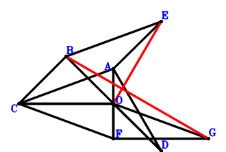
\(\because \) O is the midpoint of BD \(\therefore \small\overrightarrow{OD}=- \small\overrightarrow{OB}\).\(\because \) EBCA is a parallelogram \(\therefore \small\overrightarrow{OE}=\small\overrightarrow{OA} + \small\overrightarrow{OB} - \small\overrightarrow{OC}\).\(\because \) O is the midpoint of AF \(\therefore \small\overrightarrow{OF}=- \small\overrightarrow{OA}\).\(\because \) CFGO is a parallelogram \(\therefore \small\overrightarrow{OG}=- \small\overrightarrow{OA} - \small\overrightarrow{OC}\).\(\because \) CO=AD \( \therefore- \small\overrightarrow{DA}^{2} + \small\overrightarrow{OC}^{2}=\small\overrightarrow{OC}^{2} - \left(\small\overrightarrow{OA} - \small\overrightarrow{OD}\right)^{2}=\small\overrightarrow{OC}^{2} - \left(\small\overrightarrow{OA} + \small\overrightarrow{OB}\right)^{2}=- \small\overrightarrow{OA}^{2} - 2 \small\overrightarrow{OA} \cdot \small\overrightarrow{OB} - \small\overrightarrow{OB}^{2} + \small\overrightarrow{OC}^{2}=0.\)In conclusion, \(\small\overrightarrow{GB} \cdot \small\overrightarrow{OE}=\small\overrightarrow{OE} \cdot \left(\small\overrightarrow{OB} - \small\overrightarrow{OG}\right)=\left(\small\overrightarrow{OA} + \small\overrightarrow{OB} - \small\overrightarrow{OC}\right) \cdot \left(\small\overrightarrow{OA} + \small\overrightarrow{OB} + \small\overrightarrow{OC}\right)=\small\overrightarrow{OA}^{2} + 2 \small\overrightarrow{OA} \cdot \small\overrightarrow{OB} + \small\overrightarrow{OB}^{2} - \small\overrightarrow{OC}^{2}=0\), that is, OE⊥BG.
Exercise 55： Let ACFO and ECOA be parallelograms. O is the midpoint of BD. CO=AD. Prove that ED⊥FB.
\(\because \) O is the midpoint of BD \(\therefore \small\overrightarrow{OD}=- \small\overrightarrow{OB}\).\(\because \) ECOA is a parallelogram \(\therefore \small\overrightarrow{OE}=\small\overrightarrow{OA} + \small\overrightarrow{OC}\).\(\because \) ACFO is a parallelogram \(\therefore \small\overrightarrow{OF}=- \small\overrightarrow{OA} + \small\overrightarrow{OC}\).\(\because \) CO=AD \( \therefore- \small\overrightarrow{DA}^{2} + \small\overrightarrow{OC}^{2}=\small\overrightarrow{OC}^{2} - \left(\small\overrightarrow{OA} - \small\overrightarrow{OD}\right)^{2}=\small\overrightarrow{OC}^{2} - \left(\small\overrightarrow{OA} + \small\overrightarrow{OB}\right)^{2}=- \small\overrightarrow{OA}^{2} - 2 \small\overrightarrow{OA} \cdot \small\overrightarrow{OB} - \small\overrightarrow{OB}^{2} + \small\overrightarrow{OC}^{2}=0.\)In conclusion, \(\small\overrightarrow{DE} \cdot \small\overrightarrow{FB}=\left(\small\overrightarrow{OB} - \small\overrightarrow{OF}\right) \cdot \left(- \small\overrightarrow{OD} + \small\overrightarrow{OE}\right)=\left(\small\overrightarrow{OA} + \small\overrightarrow{OB} - \small\overrightarrow{OC}\right) \cdot \left(\small\overrightarrow{OA} + \small\overrightarrow{OB} + \small\overrightarrow{OC}\right)=\small\overrightarrow{OA}^{2} + 2 \small\overrightarrow{OA} \cdot \small\overrightarrow{OB} + \small\overrightarrow{OB}^{2} - \small\overrightarrow{OC}^{2}=0\), that is, ED⊥FB.
Exercise 64： Let ACGO be a parallelogram. O is the midpoint of BD. E is the midpoint of FO and CA. CO=AD. Prove that FD⊥GB.
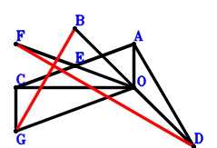
\(\because \) O is the midpoint of BD \(\therefore \small\overrightarrow{OD}=- \small\overrightarrow{OB}\).\(\because \) E is the midpoint of CA \(\therefore \small\overrightarrow{OE}=\dfrac{\small\overrightarrow{OA}}{2} + \dfrac{\small\overrightarrow{OC}}{2}\).\(\because \) E is the midpoint of FO \(\therefore \small\overrightarrow{OF}=2 \small\overrightarrow{OE}=\small\overrightarrow{OA} + \small\overrightarrow{OC}\).\(\because \) ACGO is a parallelogram \(\therefore \small\overrightarrow{OG}=- \small\overrightarrow{OA} + \small\overrightarrow{OC}\).\(\because \) CO=AD \( \therefore- \small\overrightarrow{DA}^{2} + \small\overrightarrow{OC}^{2}=\small\overrightarrow{OC}^{2} - \left(\small\overrightarrow{OA} - \small\overrightarrow{OD}\right)^{2}=\small\overrightarrow{OC}^{2} - \left(\small\overrightarrow{OA} + \small\overrightarrow{OB}\right)^{2}=- \small\overrightarrow{OA}^{2} - 2 \small\overrightarrow{OA} \cdot \small\overrightarrow{OB} - \small\overrightarrow{OB}^{2} + \small\overrightarrow{OC}^{2}=0.\)In conclusion, \(\small\overrightarrow{DF} \cdot \small\overrightarrow{GB}=\left(\small\overrightarrow{OB} - \small\overrightarrow{OG}\right) \cdot \left(- \small\overrightarrow{OD} + \small\overrightarrow{OF}\right)=\left(\small\overrightarrow{OA} + \small\overrightarrow{OB} - \small\overrightarrow{OC}\right) \cdot \left(\small\overrightarrow{OA} + \small\overrightarrow{OB} + \small\overrightarrow{OC}\right)=\small\overrightarrow{OA}^{2} + 2 \small\overrightarrow{OA} \cdot \small\overrightarrow{OB} + \small\overrightarrow{OB}^{2} - \small\overrightarrow{OC}^{2}=0\), that is, FD⊥GB.
Exercise 85： Let HBOG and EBOA be parallelograms. O is the midpoint of BD. F is the midpoint of CA and GO. CO=AD. Prove that CE⊥HO.
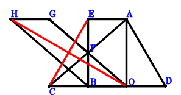
\(\because \) O is the midpoint of BD \(\therefore \small\overrightarrow{OD}=- \small\overrightarrow{OB}\).\(\because \) EBOA is a parallelogram \(\therefore \small\overrightarrow{OE}=\small\overrightarrow{OA} + \small\overrightarrow{OB}\).\(\because \) F is the midpoint of CA \(\therefore \small\overrightarrow{OF}=\dfrac{\small\overrightarrow{OA}}{2} + \dfrac{\small\overrightarrow{OC}}{2}\).\(\because \) F is the midpoint of GO \(\therefore \small\overrightarrow{OG}=2 \small\overrightarrow{OF}=\small\overrightarrow{OA} + \small\overrightarrow{OC}\).\(\because \) HBOG is a parallelogram \(\therefore \small\overrightarrow{OH}=\small\overrightarrow{OA} + \small\overrightarrow{OB} + \small\overrightarrow{OC}\).\(\because \) CO=AD \( \therefore- \small\overrightarrow{DA}^{2} + \small\overrightarrow{OC}^{2}=\small\overrightarrow{OC}^{2} - \left(\small\overrightarrow{OA} - \small\overrightarrow{OD}\right)^{2}=\small\overrightarrow{OC}^{2} - \left(\small\overrightarrow{OA} + \small\overrightarrow{OB}\right)^{2}=- \small\overrightarrow{OA}^{2} - 2 \small\overrightarrow{OA} \cdot \small\overrightarrow{OB} - \small\overrightarrow{OB}^{2} + \small\overrightarrow{OC}^{2}=0.\)In conclusion, \(\small\overrightarrow{CE} \cdot \small\overrightarrow{OH}=\small\overrightarrow{OH} \cdot \left(- \small\overrightarrow{OC} + \small\overrightarrow{OE}\right)=\left(\small\overrightarrow{OA} + \small\overrightarrow{OB} - \small\overrightarrow{OC}\right) \cdot \left(\small\overrightarrow{OA} + \small\overrightarrow{OB} + \small\overrightarrow{OC}\right)=\small\overrightarrow{OA}^{2} + 2 \small\overrightarrow{OA} \cdot \small\overrightarrow{OB} + \small\overrightarrow{OB}^{2} - \small\overrightarrow{OC}^{2}=0\), that is, CE⊥HO.
Exercise 128： Let FCOE and EBOA be parallelograms. O is the midpoint of BD. CO=AD. Prove that CE⊥FO.
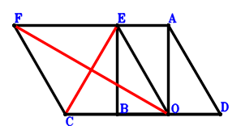
\(\because \) O is the midpoint of BD \(\therefore \small\overrightarrow{OD}=- \small\overrightarrow{OB}\).\(\because \) EBOA is a parallelogram \(\therefore \small\overrightarrow{OE}=\small\overrightarrow{OA} + \small\overrightarrow{OB}\).\(\because \) FCOE is a parallelogram \(\therefore \small\overrightarrow{OF}=\small\overrightarrow{OA} + \small\overrightarrow{OB} + \small\overrightarrow{OC}\).\(\because \) CO=AD \( \therefore- \small\overrightarrow{DA}^{2} + \small\overrightarrow{OC}^{2}=\small\overrightarrow{OC}^{2} - \left(\small\overrightarrow{OA} - \small\overrightarrow{OD}\right)^{2}=\small\overrightarrow{OC}^{2} - \left(\small\overrightarrow{OA} + \small\overrightarrow{OB}\right)^{2}=- \small\overrightarrow{OA}^{2} - 2 \small\overrightarrow{OA} \cdot \small\overrightarrow{OB} - \small\overrightarrow{OB}^{2} + \small\overrightarrow{OC}^{2}=0.\)In conclusion, \(\small\overrightarrow{CE} \cdot \small\overrightarrow{OF}=\small\overrightarrow{OF} \cdot \left(- \small\overrightarrow{OC} + \small\overrightarrow{OE}\right)=\left(\small\overrightarrow{OA} + \small\overrightarrow{OB} - \small\overrightarrow{OC}\right) \cdot \left(\small\overrightarrow{OA} + \small\overrightarrow{OB} + \small\overrightarrow{OC}\right)=\small\overrightarrow{OA}^{2} + 2 \small\overrightarrow{OA} \cdot \small\overrightarrow{OB} + \small\overrightarrow{OB}^{2} - \small\overrightarrow{OC}^{2}=0\), that is, CE⊥FO.
Exercise 152： Let ACGO be a parallelogram. FBOE is a trapezoid with FB//EO and FB=2EO. E, O are the midpoints of CA, BD, respectively. CO=AD. Prove that FO⊥GB.
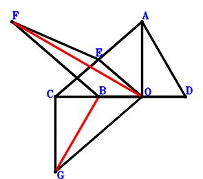
\(\because \) O is the midpoint of BD \(\therefore \small\overrightarrow{OD}=- \small\overrightarrow{OB}\).\(\because \) E is the midpoint of CA \(\therefore \small\overrightarrow{OE}=\dfrac{\small\overrightarrow{OA}}{2} + \dfrac{\small\overrightarrow{OC}}{2}\).\(\because \) FB//EO and FB=2EO \(\therefore \small\overrightarrow{OF}=\small\overrightarrow{OB} + 2 \small\overrightarrow{OE}=\small\overrightarrow{OA} + \small\overrightarrow{OB} + \small\overrightarrow{OC}\).\(\because \) ACGO is a parallelogram \(\therefore \small\overrightarrow{OG}=- \small\overrightarrow{OA} + \small\overrightarrow{OC}\).\(\because \) CO=AD \( \therefore- \small\overrightarrow{DA}^{2} + \small\overrightarrow{OC}^{2}=\small\overrightarrow{OC}^{2} - \left(\small\overrightarrow{OA} - \small\overrightarrow{OD}\right)^{2}=\small\overrightarrow{OC}^{2} - \left(\small\overrightarrow{OA} + \small\overrightarrow{OB}\right)^{2}=- \small\overrightarrow{OA}^{2} - 2 \small\overrightarrow{OA} \cdot \small\overrightarrow{OB} - \small\overrightarrow{OB}^{2} + \small\overrightarrow{OC}^{2}=0.\)In conclusion, \(\small\overrightarrow{GB} \cdot \small\overrightarrow{OF}=\small\overrightarrow{OF} \cdot \left(\small\overrightarrow{OB} - \small\overrightarrow{OG}\right)=\left(\small\overrightarrow{OA} + \small\overrightarrow{OB} - \small\overrightarrow{OC}\right) \cdot \left(\small\overrightarrow{OA} + \small\overrightarrow{OB} + \small\overrightarrow{OC}\right)=\small\overrightarrow{OA}^{2} + 2 \small\overrightarrow{OA} \cdot \small\overrightarrow{OB} + \small\overrightarrow{OB}^{2} - \small\overrightarrow{OC}^{2}=0\), that is, FO⊥GB.
Exercise 270： Let GCOE be a trapezoid with CO//GE and CO=2GE. O is the midpoint of BD. E is the midpoint of FO and BA. CO=AD. Prove that CF⊥GO.
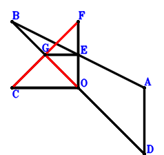
\(\because \) O is the midpoint of BD \(\therefore \small\overrightarrow{OD}=- \small\overrightarrow{OB}\).\(\because \) E is the midpoint of BA \(\therefore \small\overrightarrow{OE}=\dfrac{\small\overrightarrow{OA}}{2} + \dfrac{\small\overrightarrow{OB}}{2}\).\(\because \) E is the midpoint of FO \(\therefore \small\overrightarrow{OF}=2 \small\overrightarrow{OE}=\small\overrightarrow{OA} + \small\overrightarrow{OB}\).\(\because \) CO//GE and CO=2GE \(\therefore \small\overrightarrow{OG}=\dfrac{\small\overrightarrow{OA}}{2} + \dfrac{\small\overrightarrow{OB}}{2} + \dfrac{\small\overrightarrow{OC}}{2}\).\(\because \) CO=AD \( \therefore- \small\overrightarrow{DA}^{2} + \small\overrightarrow{OC}^{2}=\small\overrightarrow{OC}^{2} - \left(\small\overrightarrow{OA} - \small\overrightarrow{OD}\right)^{2}=\small\overrightarrow{OC}^{2} - \left(\small\overrightarrow{OA} + \small\overrightarrow{OB}\right)^{2}=- \small\overrightarrow{OA}^{2} - 2 \small\overrightarrow{OA} \cdot \small\overrightarrow{OB} - \small\overrightarrow{OB}^{2} + \small\overrightarrow{OC}^{2}=0.\)In conclusion, \(\small\overrightarrow{CF} \cdot \small\overrightarrow{OG}=\small\overrightarrow{OG} \cdot \left(- \small\overrightarrow{OC} + \small\overrightarrow{OF}\right)=\left(\dfrac{\small\overrightarrow{OA}}{2} + \dfrac{\small\overrightarrow{OB}}{2} + \dfrac{\small\overrightarrow{OC}}{2}\right) \cdot \left(\small\overrightarrow{OA} + \small\overrightarrow{OB} - \small\overrightarrow{OC}\right)=\dfrac{\small\overrightarrow{OA}^{2}}{2} + \small\overrightarrow{OA} \cdot \small\overrightarrow{OB} + \dfrac{\small\overrightarrow{OB}^{2}}{2} - \dfrac{\small\overrightarrow{OC}^{2}}{2}=0\), that is, CF⊥GO.
Exercise 278： Let EFAO and EBOC be parallelograms. H, G, O are the midpoints of BA, CO, BD, respectively. CO=AD. Prove that FO⊥GH.
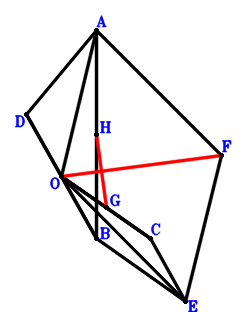
\(\because \) O is the midpoint of BD \(\therefore \small\overrightarrow{OD}=- \small\overrightarrow{OB}\).\(\because \) EBOC is a parallelogram \(\therefore \small\overrightarrow{OE}=\small\overrightarrow{OB} + \small\overrightarrow{OC}\).\(\because \) EFAO is a parallelogram \(\therefore \small\overrightarrow{OF}=\small\overrightarrow{OA} + \small\overrightarrow{OB} + \small\overrightarrow{OC}\).\(\because \) G is the midpoint of CO \(\therefore \small\overrightarrow{OG}=\dfrac{\small\overrightarrow{OC}}{2}\).\(\because \) H is the midpoint of BA \(\therefore \small\overrightarrow{OH}=\dfrac{\small\overrightarrow{OA}}{2} + \dfrac{\small\overrightarrow{OB}}{2}\).\(\because \) CO=AD \( \therefore- \small\overrightarrow{DA}^{2} + \small\overrightarrow{OC}^{2}=\small\overrightarrow{OC}^{2} - \left(\small\overrightarrow{OA} - \small\overrightarrow{OD}\right)^{2}=\small\overrightarrow{OC}^{2} - \left(\small\overrightarrow{OA} + \small\overrightarrow{OB}\right)^{2}=- \small\overrightarrow{OA}^{2} - 2 \small\overrightarrow{OA} \cdot \small\overrightarrow{OB} - \small\overrightarrow{OB}^{2} + \small\overrightarrow{OC}^{2}=0.\)In conclusion, \(\small\overrightarrow{GH} \cdot \small\overrightarrow{OF}=\small\overrightarrow{OF} \cdot \left(- \small\overrightarrow{OG} + \small\overrightarrow{OH}\right)=\left(\dfrac{\small\overrightarrow{OA}}{2} + \dfrac{\small\overrightarrow{OB}}{2} - \dfrac{\small\overrightarrow{OC}}{2}\right) \cdot \left(\small\overrightarrow{OA} + \small\overrightarrow{OB} + \small\overrightarrow{OC}\right)=\dfrac{\small\overrightarrow{OA}^{2}}{2} + \small\overrightarrow{OA} \cdot \small\overrightarrow{OB} + \dfrac{\small\overrightarrow{OB}^{2}}{2} - \dfrac{\small\overrightarrow{OC}^{2}}{2}=0\), that is, FO⊥GH.
Exercise 285： Let FEOA be a trapezoid with FA//EO and FA=2EO. E, O are the midpoints of CB, BD, respectively. G is the midpoint of CO and BH. CO=AD. Prove that FO⊥HA.
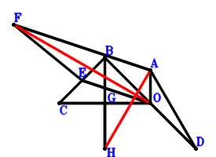
\(\because \) O is the midpoint of BD \(\therefore \small\overrightarrow{OD}=- \small\overrightarrow{OB}\).\(\because \) E is the midpoint of CB \(\therefore \small\overrightarrow{OE}=\dfrac{\small\overrightarrow{OB}}{2} + \dfrac{\small\overrightarrow{OC}}{2}\).\(\because \) FA//EO and FA=2EO \(\therefore \small\overrightarrow{OF}=\small\overrightarrow{OA} + 2 \small\overrightarrow{OE}=\small\overrightarrow{OA} + \small\overrightarrow{OB} + \small\overrightarrow{OC}\).\(\because \) G is the midpoint of CO \(\therefore \small\overrightarrow{OG}=\dfrac{\small\overrightarrow{OC}}{2}\).\(\because \) G is the midpoint of BH \(\therefore \small\overrightarrow{OH}=- \small\overrightarrow{OB} + 2 \small\overrightarrow{OG}=- \small\overrightarrow{OB} + \small\overrightarrow{OC}\).\(\because \) CO=AD \( \therefore- \small\overrightarrow{DA}^{2} + \small\overrightarrow{OC}^{2}=\small\overrightarrow{OC}^{2} - \left(\small\overrightarrow{OA} - \small\overrightarrow{OD}\right)^{2}=\small\overrightarrow{OC}^{2} - \left(\small\overrightarrow{OA} + \small\overrightarrow{OB}\right)^{2}=- \small\overrightarrow{OA}^{2} - 2 \small\overrightarrow{OA} \cdot \small\overrightarrow{OB} - \small\overrightarrow{OB}^{2} + \small\overrightarrow{OC}^{2}=0.\)In conclusion, \(\small\overrightarrow{HA} \cdot \small\overrightarrow{OF}=\small\overrightarrow{OF} \cdot \left(\small\overrightarrow{OA} - \small\overrightarrow{OH}\right)=\left(\small\overrightarrow{OA} + \small\overrightarrow{OB} - \small\overrightarrow{OC}\right) \cdot \left(\small\overrightarrow{OA} + \small\overrightarrow{OB} + \small\overrightarrow{OC}\right)=\small\overrightarrow{OA}^{2} + 2 \small\overrightarrow{OA} \cdot \small\overrightarrow{OB} + \small\overrightarrow{OB}^{2} - \small\overrightarrow{OC}^{2}=0\), that is, FO⊥HA.
Exercise 298： Let G be the centroid of △ABC. O is the midpoint of BD. E is the midpoint of OC and AF. OC=AD. Prove that BF⊥OG.
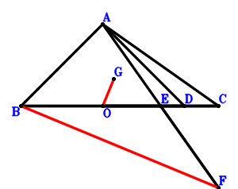
\(\because \) O is the midpoint of BD \(\therefore \small\overrightarrow{OD}=- \small\overrightarrow{OB}\).\(\because \) E is the midpoint of OC \(\therefore \small\overrightarrow{OE}=\dfrac{\small\overrightarrow{OC}}{2}\).\(\because \) E is the midpoint of AF \(\therefore \small\overrightarrow{OF}=- \small\overrightarrow{OA} + 2 \small\overrightarrow{OE}=- \small\overrightarrow{OA} + \small\overrightarrow{OC}\).\(\because \) G is the centroid of △ABC \(\therefore \small\overrightarrow{OG}=\dfrac{\small\overrightarrow{OA}}{3} + \dfrac{\small\overrightarrow{OB}}{3} + \dfrac{\small\overrightarrow{OC}}{3}\).\(\because \) OC=AD \( \therefore- \small\overrightarrow{DA}^{2} + \small\overrightarrow{OC}^{2}=\small\overrightarrow{OC}^{2} - \left(\small\overrightarrow{OA} - \small\overrightarrow{OD}\right)^{2}=\small\overrightarrow{OC}^{2} - \left(\small\overrightarrow{OA} + \small\overrightarrow{OB}\right)^{2}=- \small\overrightarrow{OA}^{2} - 2 \small\overrightarrow{OA} \cdot \small\overrightarrow{OB} - \small\overrightarrow{OB}^{2} + \small\overrightarrow{OC}^{2}=0.\)In conclusion, \(\small\overrightarrow{FB} \cdot \small\overrightarrow{OG}=\small\overrightarrow{OG} \cdot \left(\small\overrightarrow{OB} - \small\overrightarrow{OF}\right)=\left(\dfrac{\small\overrightarrow{OA}}{3} + \dfrac{\small\overrightarrow{OB}}{3} + \dfrac{\small\overrightarrow{OC}}{3}\right) \cdot \left(\small\overrightarrow{OA} + \small\overrightarrow{OB} - \small\overrightarrow{OC}\right)=\dfrac{\small\overrightarrow{OA}^{2}}{3} + \dfrac{2 \small\overrightarrow{OA} \cdot \small\overrightarrow{OB}}{3} + \dfrac{\small\overrightarrow{OB}^{2}}{3} - \dfrac{\small\overrightarrow{OC}^{2}}{3}=0\), that is, BF⊥OG.
Exercise 312： Let HBCA be a parallelogram. F is the midpoint of CB and GE. O is the midpoint of AE and BD. CO=AD. Prove that GO⊥OH.
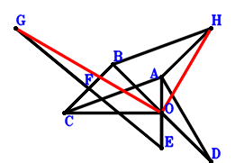
\(\because \) O is the midpoint of BD \(\therefore \small\overrightarrow{OD}=- \small\overrightarrow{OB}\).\(\because \) O is the midpoint of AE \(\therefore \small\overrightarrow{OE}=- \small\overrightarrow{OA}\).\(\because \) F is the midpoint of CB \(\therefore \small\overrightarrow{OF}=\dfrac{\small\overrightarrow{OB}}{2} + \dfrac{\small\overrightarrow{OC}}{2}\).\(\because \) F is the midpoint of GE \(\therefore \small\overrightarrow{OG}=\small\overrightarrow{OA} + 2 \small\overrightarrow{OF}=\small\overrightarrow{OA} + \small\overrightarrow{OB} + \small\overrightarrow{OC}\).\(\because \) HBCA is a parallelogram \(\therefore \small\overrightarrow{OH}=\small\overrightarrow{OA} + \small\overrightarrow{OB} - \small\overrightarrow{OC}\).\(\because \) CO=AD \( \therefore- \small\overrightarrow{DA}^{2} + \small\overrightarrow{OC}^{2}=\small\overrightarrow{OC}^{2} - \left(\small\overrightarrow{OA} - \small\overrightarrow{OD}\right)^{2}=\small\overrightarrow{OC}^{2} - \left(\small\overrightarrow{OA} + \small\overrightarrow{OB}\right)^{2}=- \small\overrightarrow{OA}^{2} - 2 \small\overrightarrow{OA} \cdot \small\overrightarrow{OB} - \small\overrightarrow{OB}^{2} + \small\overrightarrow{OC}^{2}=0.\)In conclusion, \(\small\overrightarrow{OG} \cdot \small\overrightarrow{OH}=\left(\small\overrightarrow{OA} + \small\overrightarrow{OB} - \small\overrightarrow{OC}\right) \cdot \left(\small\overrightarrow{OA} + \small\overrightarrow{OB} + \small\overrightarrow{OC}\right)=\small\overrightarrow{OA}^{2} + 2 \small\overrightarrow{OA} \cdot \small\overrightarrow{OB} + \small\overrightarrow{OB}^{2} - \small\overrightarrow{OC}^{2}=0\), that is, GO⊥OH.
Exercise 372： Let BCAE be a parallelogram. B, G, F are collinear and BG=2GF. F, O are the midpoints of CA, BD, respectively. CO=AD. Prove that GO⊥OE.
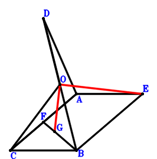
\(\because \) O is the midpoint of BD \(\therefore \small\overrightarrow{OD}=- \small\overrightarrow{OB}\).\(\because \) BCAE is a parallelogram \(\therefore \small\overrightarrow{OE}=\small\overrightarrow{OA} + \small\overrightarrow{OB} - \small\overrightarrow{OC}\).\(\because \) F is the midpoint of CA \(\therefore \small\overrightarrow{OF}=\dfrac{\small\overrightarrow{OA}}{2} + \dfrac{\small\overrightarrow{OC}}{2}\).\(\because \) B, G, F are collinear and BG=2GF \(\therefore \small\overrightarrow{OG}=\dfrac{\small\overrightarrow{OB}}{3} + \dfrac{2 \small\overrightarrow{OF}}{3}=\dfrac{\small\overrightarrow{OA}}{3} + \dfrac{\small\overrightarrow{OB}}{3} + \dfrac{\small\overrightarrow{OC}}{3}\).\(\because \) CO=AD \( \therefore- \small\overrightarrow{DA}^{2} + \small\overrightarrow{OC}^{2}=\small\overrightarrow{OC}^{2} - \left(\small\overrightarrow{OA} - \small\overrightarrow{OD}\right)^{2}=\small\overrightarrow{OC}^{2} - \left(\small\overrightarrow{OA} + \small\overrightarrow{OB}\right)^{2}=- \small\overrightarrow{OA}^{2} - 2 \small\overrightarrow{OA} \cdot \small\overrightarrow{OB} - \small\overrightarrow{OB}^{2} + \small\overrightarrow{OC}^{2}=0.\)In conclusion, \(\small\overrightarrow{OE} \cdot \small\overrightarrow{OG}=\left(\dfrac{\small\overrightarrow{OA}}{3} + \dfrac{\small\overrightarrow{OB}}{3} + \dfrac{\small\overrightarrow{OC}}{3}\right) \cdot \left(\small\overrightarrow{OA} + \small\overrightarrow{OB} - \small\overrightarrow{OC}\right)=\dfrac{\small\overrightarrow{OA}^{2}}{3} + \dfrac{2 \small\overrightarrow{OA} \cdot \small\overrightarrow{OB}}{3} + \dfrac{\small\overrightarrow{OB}^{2}}{3} - \dfrac{\small\overrightarrow{OC}^{2}}{3}=0\), that is, GO⊥OE.
Exercise 420： Let AOBF, ACBE and GCOF be parallelograms. O is the midpoint of DB. CO=DA. Prove that GO⊥OE.
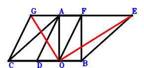
\(\because \) O is the midpoint of DB \(\therefore \small\overrightarrow{OD}=- \small\overrightarrow{OB}\).\(\because \) ACBE is a parallelogram \(\therefore \small\overrightarrow{OE}=\small\overrightarrow{OA} + \small\overrightarrow{OB} - \small\overrightarrow{OC}\).\(\because \) AOBF is a parallelogram \(\therefore \small\overrightarrow{OF}=\small\overrightarrow{OA} + \small\overrightarrow{OB}\).\(\because \) GCOF is a parallelogram \(\therefore \small\overrightarrow{OG}=\small\overrightarrow{OA} + \small\overrightarrow{OB} + \small\overrightarrow{OC}\).\(\because \) CO=DA \( \therefore- \small\overrightarrow{DA}^{2} + \small\overrightarrow{OC}^{2}=\small\overrightarrow{OC}^{2} - \left(\small\overrightarrow{OA} - \small\overrightarrow{OD}\right)^{2}=\small\overrightarrow{OC}^{2} - \left(\small\overrightarrow{OA} + \small\overrightarrow{OB}\right)^{2}=- \small\overrightarrow{OA}^{2} - 2 \small\overrightarrow{OA} \cdot \small\overrightarrow{OB} - \small\overrightarrow{OB}^{2} + \small\overrightarrow{OC}^{2}=0.\)In conclusion, \(\small\overrightarrow{OE} \cdot \small\overrightarrow{OG}=\left(\small\overrightarrow{OA} + \small\overrightarrow{OB} - \small\overrightarrow{OC}\right) \cdot \left(\small\overrightarrow{OA} + \small\overrightarrow{OB} + \small\overrightarrow{OC}\right)=\small\overrightarrow{OA}^{2} + 2 \small\overrightarrow{OA} \cdot \small\overrightarrow{OB} + \small\overrightarrow{OB}^{2} - \small\overrightarrow{OC}^{2}=0\), that is, GO⊥OE.
Exercise 459： Let GBOA and HCOG be parallelograms. O is the midpoint of BD. E is the midpoint of BA and CF. CO=AD. Prove that HO⊥OF.
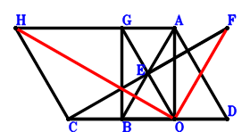
\(\because \) O is the midpoint of BD \(\therefore \small\overrightarrow{OD}=- \small\overrightarrow{OB}\).\(\because \) E is the midpoint of BA \(\therefore \small\overrightarrow{OE}=\dfrac{\small\overrightarrow{OA}}{2} + \dfrac{\small\overrightarrow{OB}}{2}\).\(\because \) E is the midpoint of CF \(\therefore \small\overrightarrow{OF}=- \small\overrightarrow{OC} + 2 \small\overrightarrow{OE}=\small\overrightarrow{OA} + \small\overrightarrow{OB} - \small\overrightarrow{OC}\).\(\because \) GBOA is a parallelogram \(\therefore \small\overrightarrow{OG}=\small\overrightarrow{OA} + \small\overrightarrow{OB}\).\(\because \) HCOG is a parallelogram \(\therefore \small\overrightarrow{OH}=\small\overrightarrow{OA} + \small\overrightarrow{OB} + \small\overrightarrow{OC}\).\(\because \) CO=AD \( \therefore- \small\overrightarrow{DA}^{2} + \small\overrightarrow{OC}^{2}=\small\overrightarrow{OC}^{2} - \left(\small\overrightarrow{OA} - \small\overrightarrow{OD}\right)^{2}=\small\overrightarrow{OC}^{2} - \left(\small\overrightarrow{OA} + \small\overrightarrow{OB}\right)^{2}=- \small\overrightarrow{OA}^{2} - 2 \small\overrightarrow{OA} \cdot \small\overrightarrow{OB} - \small\overrightarrow{OB}^{2} + \small\overrightarrow{OC}^{2}=0.\)In conclusion, \(\small\overrightarrow{OF} \cdot \small\overrightarrow{OH}=\left(\small\overrightarrow{OA} + \small\overrightarrow{OB} - \small\overrightarrow{OC}\right) \cdot \left(\small\overrightarrow{OA} + \small\overrightarrow{OB} + \small\overrightarrow{OC}\right)=\small\overrightarrow{OA}^{2} + 2 \small\overrightarrow{OA} \cdot \small\overrightarrow{OB} + \small\overrightarrow{OB}^{2} - \small\overrightarrow{OC}^{2}=0\), that is, HO⊥OF.
Exercise 474： Let EACB be a parallelogram. B, O, F are collinear and BF=3OF. O, G are the midpoints of AD, CA, respectively. CO=BD. Prove that OE⊥GF.
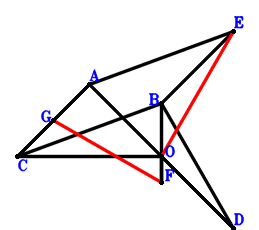
\(\because \) O is the midpoint of AD \(\therefore \small\overrightarrow{OD}=- \small\overrightarrow{OA}\).\(\because \) EACB is a parallelogram \(\therefore \small\overrightarrow{OE}=\small\overrightarrow{OA} + \small\overrightarrow{OB} - \small\overrightarrow{OC}\).\(\because \) B, O, F are collinear and BF=3OF \(\therefore \small\overrightarrow{OF}=- \dfrac{\small\overrightarrow{OB}}{2}\).\(\because \) G is the midpoint of CA \(\therefore \small\overrightarrow{OG}=\dfrac{\small\overrightarrow{OA}}{2} + \dfrac{\small\overrightarrow{OC}}{2}\).\(\because \) CO=BD \( \therefore- \small\overrightarrow{DB}^{2} + \small\overrightarrow{OC}^{2}=\small\overrightarrow{OC}^{2} - \left(\small\overrightarrow{OB} - \small\overrightarrow{OD}\right)^{2}=\small\overrightarrow{OC}^{2} - \left(\small\overrightarrow{OA} + \small\overrightarrow{OB}\right)^{2}=- \small\overrightarrow{OA}^{2} - 2 \small\overrightarrow{OA} \cdot \small\overrightarrow{OB} - \small\overrightarrow{OB}^{2} + \small\overrightarrow{OC}^{2}=0.\)In conclusion, \(\small\overrightarrow{FG} \cdot \small\overrightarrow{OE}=\small\overrightarrow{OE} \cdot \left(- \small\overrightarrow{OF} + \small\overrightarrow{OG}\right)=\left(\dfrac{\small\overrightarrow{OA}}{2} + \dfrac{\small\overrightarrow{OB}}{2} + \dfrac{\small\overrightarrow{OC}}{2}\right) \cdot \left(\small\overrightarrow{OA} + \small\overrightarrow{OB} - \small\overrightarrow{OC}\right)=\dfrac{\small\overrightarrow{OA}^{2}}{2} + \small\overrightarrow{OA} \cdot \small\overrightarrow{OB} + \dfrac{\small\overrightarrow{OB}^{2}}{2} - \dfrac{\small\overrightarrow{OC}^{2}}{2}=0\), that is, OE⊥GF.
Exercise 485： Let EBOA be a parallelogram. H, G are the midpoints of BA, OC, respectively. O is the midpoint of AD and EF. OC=BD. Prove that FC⊥HG.
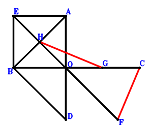
\(\because \) O is the midpoint of AD \(\therefore \small\overrightarrow{OD}=- \small\overrightarrow{OA}\).\(\because \) EBOA is a parallelogram \(\therefore \small\overrightarrow{OE}=\small\overrightarrow{OA} + \small\overrightarrow{OB}\).\(\because \) O is the midpoint of EF \(\therefore \small\overrightarrow{OF}=- \small\overrightarrow{OE}=- \small\overrightarrow{OA} - \small\overrightarrow{OB}\).\(\because \) G is the midpoint of OC \(\therefore \small\overrightarrow{OG}=\dfrac{\small\overrightarrow{OC}}{2}\).\(\because \) H is the midpoint of BA \(\therefore \small\overrightarrow{OH}=\dfrac{\small\overrightarrow{OA}}{2} + \dfrac{\small\overrightarrow{OB}}{2}\).\(\because \) OC=BD \( \therefore- \small\overrightarrow{DB}^{2} + \small\overrightarrow{OC}^{2}=\small\overrightarrow{OC}^{2} - \left(\small\overrightarrow{OB} - \small\overrightarrow{OD}\right)^{2}=\small\overrightarrow{OC}^{2} - \left(\small\overrightarrow{OA} + \small\overrightarrow{OB}\right)^{2}=- \small\overrightarrow{OA}^{2} - 2 \small\overrightarrow{OA} \cdot \small\overrightarrow{OB} - \small\overrightarrow{OB}^{2} + \small\overrightarrow{OC}^{2}=0.\)In conclusion, \(\small\overrightarrow{FC} \cdot \small\overrightarrow{GH}=\left(\small\overrightarrow{OC} - \small\overrightarrow{OF}\right) \cdot \left(- \small\overrightarrow{OG} + \small\overrightarrow{OH}\right)=\left(\dfrac{\small\overrightarrow{OA}}{2} + \dfrac{\small\overrightarrow{OB}}{2} - \dfrac{\small\overrightarrow{OC}}{2}\right) \cdot \left(\small\overrightarrow{OA} + \small\overrightarrow{OB} + \small\overrightarrow{OC}\right)=\dfrac{\small\overrightarrow{OA}^{2}}{2} + \small\overrightarrow{OA} \cdot \small\overrightarrow{OB} + \dfrac{\small\overrightarrow{OB}^{2}}{2} - \dfrac{\small\overrightarrow{OC}^{2}}{2}=0\), that is, FC⊥HG.
Exercise 497： Let EBOA be a parallelogram. O, F are the midpoints of AD, EC, respectively. OC=BD. Prove that EC⊥OF.
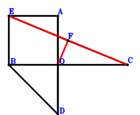
\(\because \) O is the midpoint of AD \(\therefore \small\overrightarrow{OD}=- \small\overrightarrow{OA}\).\(\because \) EBOA is a parallelogram \(\therefore \small\overrightarrow{OE}=\small\overrightarrow{OA} + \small\overrightarrow{OB}\).\(\because \) F is the midpoint of EC \(\therefore \small\overrightarrow{OF}=\dfrac{\small\overrightarrow{OC}}{2} + \dfrac{\small\overrightarrow{OE}}{2}=\dfrac{\small\overrightarrow{OA}}{2} + \dfrac{\small\overrightarrow{OB}}{2} + \dfrac{\small\overrightarrow{OC}}{2}\).\(\because \) OC=BD \( \therefore- \small\overrightarrow{DB}^{2} + \small\overrightarrow{OC}^{2}=\small\overrightarrow{OC}^{2} - \left(\small\overrightarrow{OB} - \small\overrightarrow{OD}\right)^{2}=\small\overrightarrow{OC}^{2} - \left(\small\overrightarrow{OA} + \small\overrightarrow{OB}\right)^{2}=- \small\overrightarrow{OA}^{2} - 2 \small\overrightarrow{OA} \cdot \small\overrightarrow{OB} - \small\overrightarrow{OB}^{2} + \small\overrightarrow{OC}^{2}=0.\)In conclusion, \(\small\overrightarrow{CE} \cdot \small\overrightarrow{OF}=\small\overrightarrow{OF} \cdot \left(- \small\overrightarrow{OC} + \small\overrightarrow{OE}\right)=\left(\dfrac{\small\overrightarrow{OA}}{2} + \dfrac{\small\overrightarrow{OB}}{2} + \dfrac{\small\overrightarrow{OC}}{2}\right) \cdot \left(\small\overrightarrow{OA} + \small\overrightarrow{OB} - \small\overrightarrow{OC}\right)=\dfrac{\small\overrightarrow{OA}^{2}}{2} + \small\overrightarrow{OA} \cdot \small\overrightarrow{OB} + \dfrac{\small\overrightarrow{OB}^{2}}{2} - \dfrac{\small\overrightarrow{OC}^{2}}{2}=0\), that is, EC⊥OF.
Exercise 748： Let GFOB be a parallelogram. O is the midpoint of AD. H is the midpoint of AI and CO. E is the midpoint of FO and CA. CO=BD. Prove that GO⊥IB.
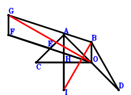
\(\because \) O is the midpoint of AD \(\therefore \small\overrightarrow{OD}=- \small\overrightarrow{OA}\).\(\because \) E is the midpoint of CA \(\therefore \small\overrightarrow{OE}=\dfrac{\small\overrightarrow{OA}}{2} + \dfrac{\small\overrightarrow{OC}}{2}\).\(\because \) E is the midpoint of FO \(\therefore \small\overrightarrow{OF}=2 \small\overrightarrow{OE}=\small\overrightarrow{OA} + \small\overrightarrow{OC}\).\(\because \) GFOB is a parallelogram \(\therefore \small\overrightarrow{OG}=\small\overrightarrow{OA} + \small\overrightarrow{OB} + \small\overrightarrow{OC}\).\(\because \) H is the midpoint of CO \(\therefore \small\overrightarrow{OH}=\dfrac{\small\overrightarrow{OC}}{2}\).\(\because \) H is the midpoint of AI \(\therefore \small\overrightarrow{OI}=- \small\overrightarrow{OA} + 2 \small\overrightarrow{OH}=- \small\overrightarrow{OA} + \small\overrightarrow{OC}\).\(\because \) CO=BD \( \therefore- \small\overrightarrow{DB}^{2} + \small\overrightarrow{OC}^{2}=\small\overrightarrow{OC}^{2} - \left(\small\overrightarrow{OB} - \small\overrightarrow{OD}\right)^{2}=\small\overrightarrow{OC}^{2} - \left(\small\overrightarrow{OA} + \small\overrightarrow{OB}\right)^{2}=- \small\overrightarrow{OA}^{2} - 2 \small\overrightarrow{OA} \cdot \small\overrightarrow{OB} - \small\overrightarrow{OB}^{2} + \small\overrightarrow{OC}^{2}=0.\)In conclusion, \(\small\overrightarrow{IB} \cdot \small\overrightarrow{OG}=\small\overrightarrow{OG} \cdot \left(\small\overrightarrow{OB} - \small\overrightarrow{OI}\right)=\left(\small\overrightarrow{OA} + \small\overrightarrow{OB} - \small\overrightarrow{OC}\right) \cdot \left(\small\overrightarrow{OA} + \small\overrightarrow{OB} + \small\overrightarrow{OC}\right)=\small\overrightarrow{OA}^{2} + 2 \small\overrightarrow{OA} \cdot \small\overrightarrow{OB} + \small\overrightarrow{OB}^{2} - \small\overrightarrow{OC}^{2}=0\), that is, GO⊥IB.
Exercise 793： Let BDFO and EBOA be parallelograms. O is the midpoint of AD. OC=BD. Prove that EC⊥CF.
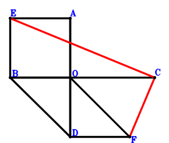
\(\because \) O is the midpoint of AD \(\therefore \small\overrightarrow{OD}=- \small\overrightarrow{OA}\).\(\because \) EBOA is a parallelogram \(\therefore \small\overrightarrow{OE}=\small\overrightarrow{OA} + \small\overrightarrow{OB}\).\(\because \) BDFO is a parallelogram \(\therefore \small\overrightarrow{OF}=- \small\overrightarrow{OA} - \small\overrightarrow{OB}\).\(\because \) OC=BD \( \therefore- \small\overrightarrow{DB}^{2} + \small\overrightarrow{OC}^{2}=\small\overrightarrow{OC}^{2} - \left(\small\overrightarrow{OB} - \small\overrightarrow{OD}\right)^{2}=\small\overrightarrow{OC}^{2} - \left(\small\overrightarrow{OA} + \small\overrightarrow{OB}\right)^{2}=- \small\overrightarrow{OA}^{2} - 2 \small\overrightarrow{OA} \cdot \small\overrightarrow{OB} - \small\overrightarrow{OB}^{2} + \small\overrightarrow{OC}^{2}=0.\)In conclusion, \(\small\overrightarrow{CE} \cdot \small\overrightarrow{FC}=\left(- \small\overrightarrow{OC} + \small\overrightarrow{OE}\right) \cdot \left(\small\overrightarrow{OC} - \small\overrightarrow{OF}\right)=\left(\small\overrightarrow{OA} + \small\overrightarrow{OB} - \small\overrightarrow{OC}\right) \cdot \left(\small\overrightarrow{OA} + \small\overrightarrow{OB} + \small\overrightarrow{OC}\right)=\small\overrightarrow{OA}^{2} + 2 \small\overrightarrow{OA} \cdot \small\overrightarrow{OB} + \small\overrightarrow{OB}^{2} - \small\overrightarrow{OC}^{2}=0\), that is, EC⊥CF.
Exercise 850： Let EBOA be a parallelogram. O is the midpoint of EF and AD. OC=BD. Prove that EC⊥CF.
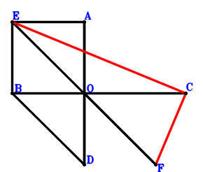
\(\because \) O is the midpoint of AD \(\therefore \small\overrightarrow{OD}=- \small\overrightarrow{OA}\).\(\because \) EBOA is a parallelogram \(\therefore \small\overrightarrow{OE}=\small\overrightarrow{OA} + \small\overrightarrow{OB}\).\(\because \) O is the midpoint of EF \(\therefore \small\overrightarrow{OF}=- \small\overrightarrow{OE}=- \small\overrightarrow{OA} - \small\overrightarrow{OB}\).\(\because \) OC=BD \( \therefore- \small\overrightarrow{DB}^{2} + \small\overrightarrow{OC}^{2}=\small\overrightarrow{OC}^{2} - \left(\small\overrightarrow{OB} - \small\overrightarrow{OD}\right)^{2}=\small\overrightarrow{OC}^{2} - \left(\small\overrightarrow{OA} + \small\overrightarrow{OB}\right)^{2}=- \small\overrightarrow{OA}^{2} - 2 \small\overrightarrow{OA} \cdot \small\overrightarrow{OB} - \small\overrightarrow{OB}^{2} + \small\overrightarrow{OC}^{2}=0.\)In conclusion, \(\small\overrightarrow{CE} \cdot \small\overrightarrow{FC}=\left(- \small\overrightarrow{OC} + \small\overrightarrow{OE}\right) \cdot \left(\small\overrightarrow{OC} - \small\overrightarrow{OF}\right)=\left(\small\overrightarrow{OA} + \small\overrightarrow{OB} - \small\overrightarrow{OC}\right) \cdot \left(\small\overrightarrow{OA} + \small\overrightarrow{OB} + \small\overrightarrow{OC}\right)=\small\overrightarrow{OA}^{2} + 2 \small\overrightarrow{OA} \cdot \small\overrightarrow{OB} + \small\overrightarrow{OB}^{2} - \small\overrightarrow{OC}^{2}=0\), that is, EC⊥CF.
Exercise 852： Let GAOC be a parallelogram. O, H are the midpoints of AD, GB, respectively. E is the midpoint of BA and CF. CO=BD. Prove that HO⊥OF.
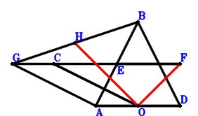
\(\because \) O is the midpoint of AD \(\therefore \small\overrightarrow{OD}=- \small\overrightarrow{OA}\).\(\because \) E is the midpoint of BA \(\therefore \small\overrightarrow{OE}=\dfrac{\small\overrightarrow{OA}}{2} + \dfrac{\small\overrightarrow{OB}}{2}\).\(\because \) E is the midpoint of CF \(\therefore \small\overrightarrow{OF}=- \small\overrightarrow{OC} + 2 \small\overrightarrow{OE}=\small\overrightarrow{OA} + \small\overrightarrow{OB} - \small\overrightarrow{OC}\).\(\because \) GAOC is a parallelogram \(\therefore \small\overrightarrow{OG}=\small\overrightarrow{OA} + \small\overrightarrow{OC}\).\(\because \) H is the midpoint of GB \(\therefore \small\overrightarrow{OH}=\dfrac{\small\overrightarrow{OB}}{2} + \dfrac{\small\overrightarrow{OG}}{2}=\dfrac{\small\overrightarrow{OA}}{2} + \dfrac{\small\overrightarrow{OB}}{2} + \dfrac{\small\overrightarrow{OC}}{2}\).\(\because \) CO=BD \( \therefore- \small\overrightarrow{DB}^{2} + \small\overrightarrow{OC}^{2}=\small\overrightarrow{OC}^{2} - \left(\small\overrightarrow{OB} - \small\overrightarrow{OD}\right)^{2}=\small\overrightarrow{OC}^{2} - \left(\small\overrightarrow{OA} + \small\overrightarrow{OB}\right)^{2}=- \small\overrightarrow{OA}^{2} - 2 \small\overrightarrow{OA} \cdot \small\overrightarrow{OB} - \small\overrightarrow{OB}^{2} + \small\overrightarrow{OC}^{2}=0.\)In conclusion, \(\small\overrightarrow{OF} \cdot \small\overrightarrow{OH}=\left(\dfrac{\small\overrightarrow{OA}}{2} + \dfrac{\small\overrightarrow{OB}}{2} + \dfrac{\small\overrightarrow{OC}}{2}\right) \cdot \left(\small\overrightarrow{OA} + \small\overrightarrow{OB} - \small\overrightarrow{OC}\right)=\dfrac{\small\overrightarrow{OA}^{2}}{2} + \small\overrightarrow{OA} \cdot \small\overrightarrow{OB} + \dfrac{\small\overrightarrow{OB}^{2}}{2} - \dfrac{\small\overrightarrow{OC}^{2}}{2}=0\), that is, HO⊥OF.
Exercise 864： Let HCOG and BCAE be parallelograms. O is the midpoint of AD. F is the midpoint of GO and AB. CO=BD. Prove that HO⊥OE.
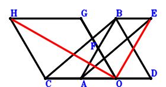
\(\because \) O is the midpoint of AD \(\therefore \small\overrightarrow{OD}=- \small\overrightarrow{OA}\).\(\because \) BCAE is a parallelogram \(\therefore \small\overrightarrow{OE}=\small\overrightarrow{OA} + \small\overrightarrow{OB} - \small\overrightarrow{OC}\).\(\because \) F is the midpoint of AB \(\therefore \small\overrightarrow{OF}=\dfrac{\small\overrightarrow{OA}}{2} + \dfrac{\small\overrightarrow{OB}}{2}\).\(\because \) F is the midpoint of GO \(\therefore \small\overrightarrow{OG}=2 \small\overrightarrow{OF}=\small\overrightarrow{OA} + \small\overrightarrow{OB}\).\(\because \) HCOG is a parallelogram \(\therefore \small\overrightarrow{OH}=\small\overrightarrow{OA} + \small\overrightarrow{OB} + \small\overrightarrow{OC}\).\(\because \) CO=BD \( \therefore- \small\overrightarrow{DB}^{2} + \small\overrightarrow{OC}^{2}=\small\overrightarrow{OC}^{2} - \left(\small\overrightarrow{OB} - \small\overrightarrow{OD}\right)^{2}=\small\overrightarrow{OC}^{2} - \left(\small\overrightarrow{OA} + \small\overrightarrow{OB}\right)^{2}=- \small\overrightarrow{OA}^{2} - 2 \small\overrightarrow{OA} \cdot \small\overrightarrow{OB} - \small\overrightarrow{OB}^{2} + \small\overrightarrow{OC}^{2}=0.\)In conclusion, \(\small\overrightarrow{OE} \cdot \small\overrightarrow{OH}=\left(\small\overrightarrow{OA} + \small\overrightarrow{OB} - \small\overrightarrow{OC}\right) \cdot \left(\small\overrightarrow{OA} + \small\overrightarrow{OB} + \small\overrightarrow{OC}\right)=\small\overrightarrow{OA}^{2} + 2 \small\overrightarrow{OA} \cdot \small\overrightarrow{OB} + \small\overrightarrow{OB}^{2} - \small\overrightarrow{OC}^{2}=0\), that is, HO⊥OE.
Exercise 895： Let BCAG be a parallelogram. FAOE is a trapezoid with FA//EO and FA=2EO. O, E are the midpoints of AD, CB, respectively. CO=BD. Prove that FO⊥OG.
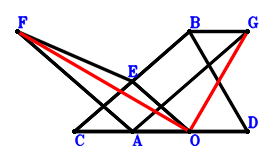
\(\because \) O is the midpoint of AD \(\therefore \small\overrightarrow{OD}=- \small\overrightarrow{OA}\).\(\because \) E is the midpoint of CB \(\therefore \small\overrightarrow{OE}=\dfrac{\small\overrightarrow{OB}}{2} + \dfrac{\small\overrightarrow{OC}}{2}\).\(\because \) FA//EO and FA=2EO \(\therefore \small\overrightarrow{OF}=\small\overrightarrow{OA} + 2 \small\overrightarrow{OE}=\small\overrightarrow{OA} + \small\overrightarrow{OB} + \small\overrightarrow{OC}\).\(\because \) BCAG is a parallelogram \(\therefore \small\overrightarrow{OG}=\small\overrightarrow{OA} + \small\overrightarrow{OB} - \small\overrightarrow{OC}\).\(\because \) CO=BD \( \therefore- \small\overrightarrow{DB}^{2} + \small\overrightarrow{OC}^{2}=\small\overrightarrow{OC}^{2} - \left(\small\overrightarrow{OB} - \small\overrightarrow{OD}\right)^{2}=\small\overrightarrow{OC}^{2} - \left(\small\overrightarrow{OA} + \small\overrightarrow{OB}\right)^{2}=- \small\overrightarrow{OA}^{2} - 2 \small\overrightarrow{OA} \cdot \small\overrightarrow{OB} - \small\overrightarrow{OB}^{2} + \small\overrightarrow{OC}^{2}=0.\)In conclusion, \(\small\overrightarrow{OF} \cdot \small\overrightarrow{OG}=\left(\small\overrightarrow{OA} + \small\overrightarrow{OB} - \small\overrightarrow{OC}\right) \cdot \left(\small\overrightarrow{OA} + \small\overrightarrow{OB} + \small\overrightarrow{OC}\right)=\small\overrightarrow{OA}^{2} + 2 \small\overrightarrow{OA} \cdot \small\overrightarrow{OB} + \small\overrightarrow{OB}^{2} - \small\overrightarrow{OC}^{2}=0\), that is, FO⊥OG.
Exercise 1094： Let ACEO be a parallelogram. F is the centroid of △ACB. D is the midpoint of BA. CO=2OD. Prove that EB⊥FO.
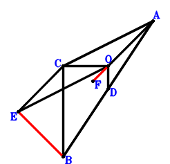
\(\because \) D is the midpoint of BA \(\therefore \small\overrightarrow{OD}=\dfrac{\small\overrightarrow{OA}}{2} + \dfrac{\small\overrightarrow{OB}}{2}\).\(\because \) ACEO is a parallelogram \(\therefore \small\overrightarrow{OE}=- \small\overrightarrow{OA} + \small\overrightarrow{OC}\).\(\because \) F is the centroid of △ACB \(\therefore \small\overrightarrow{OF}=\dfrac{\small\overrightarrow{OA}}{3} + \dfrac{\small\overrightarrow{OB}}{3} + \dfrac{\small\overrightarrow{OC}}{3}\).\(\because \) CO=2OD \( \therefore\small\overrightarrow{OC}^{2} - 4 \small\overrightarrow{OD}^{2}=\small\overrightarrow{OC}^{2} - 4 \left(\dfrac{\small\overrightarrow{OA}}{2} + \dfrac{\small\overrightarrow{OB}}{2}\right)^{2}=- \small\overrightarrow{OA}^{2} - 2 \small\overrightarrow{OA} \cdot \small\overrightarrow{OB} - \small\overrightarrow{OB}^{2} + \small\overrightarrow{OC}^{2}=0.\)In conclusion, \(\small\overrightarrow{EB} \cdot \small\overrightarrow{OF}=\small\overrightarrow{OF} \cdot \left(\small\overrightarrow{OB} - \small\overrightarrow{OE}\right)=\left(\dfrac{\small\overrightarrow{OA}}{3} + \dfrac{\small\overrightarrow{OB}}{3} + \dfrac{\small\overrightarrow{OC}}{3}\right) \cdot \left(\small\overrightarrow{OA} + \small\overrightarrow{OB} - \small\overrightarrow{OC}\right)=\dfrac{\small\overrightarrow{OA}^{2}}{3} + \dfrac{2 \small\overrightarrow{OA} \cdot \small\overrightarrow{OB}}{3} + \dfrac{\small\overrightarrow{OB}^{2}}{3} - \dfrac{\small\overrightarrow{OC}^{2}}{3}=0\), that is, EB⊥FO.
Exercise 1107： Let F, O, E be collinear and 2FE=3FO. D, E are the midpoints of AB, CB, respectively. G is the midpoint of CO and AH. CO=2DO. Prove that AF⊥HB.
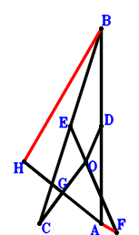
\(\because \) D is the midpoint of AB \(\therefore \small\overrightarrow{OD}=\dfrac{\small\overrightarrow{OA}}{2} + \dfrac{\small\overrightarrow{OB}}{2}\).\(\because \) E is the midpoint of CB \(\therefore \small\overrightarrow{OE}=\dfrac{\small\overrightarrow{OB}}{2} + \dfrac{\small\overrightarrow{OC}}{2}\).\(\because \) F, O, E are collinear and 2FE=3FO \(\therefore \small\overrightarrow{OF}=- 2 \small\overrightarrow{OE}=- \small\overrightarrow{OB} - \small\overrightarrow{OC}\).\(\because \) G is the midpoint of CO \(\therefore \small\overrightarrow{OG}=\dfrac{\small\overrightarrow{OC}}{2}\).\(\because \) G is the midpoint of AH \(\therefore \small\overrightarrow{OH}=- \small\overrightarrow{OA} + 2 \small\overrightarrow{OG}=- \small\overrightarrow{OA} + \small\overrightarrow{OC}\).\(\because \) CO=2DO \( \therefore\small\overrightarrow{OC}^{2} - 4 \small\overrightarrow{OD}^{2}=\small\overrightarrow{OC}^{2} - 4 \left(\dfrac{\small\overrightarrow{OA}}{2} + \dfrac{\small\overrightarrow{OB}}{2}\right)^{2}=- \small\overrightarrow{OA}^{2} - 2 \small\overrightarrow{OA} \cdot \small\overrightarrow{OB} - \small\overrightarrow{OB}^{2} + \small\overrightarrow{OC}^{2}=0.\)In conclusion, \(\small\overrightarrow{FA} \cdot \small\overrightarrow{HB}=\left(\small\overrightarrow{OA} - \small\overrightarrow{OF}\right) \cdot \left(\small\overrightarrow{OB} - \small\overrightarrow{OH}\right)=\left(\small\overrightarrow{OA} + \small\overrightarrow{OB} - \small\overrightarrow{OC}\right) \cdot \left(\small\overrightarrow{OA} + \small\overrightarrow{OB} + \small\overrightarrow{OC}\right)=\small\overrightarrow{OA}^{2} + 2 \small\overrightarrow{OA} \cdot \small\overrightarrow{OB} + \small\overrightarrow{OB}^{2} - \small\overrightarrow{OC}^{2}=0\), that is, AF⊥HB.
Exercise 1125： Let GBOA be a parallelogram. D, O are the midpoints of BA, GH, respectively. E is the midpoint of OC and AF. OC=2DO. Prove that BF⊥HC.
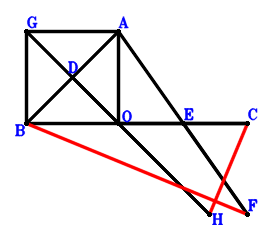
\(\because \) D is the midpoint of BA \(\therefore \small\overrightarrow{OD}=\dfrac{\small\overrightarrow{OA}}{2} + \dfrac{\small\overrightarrow{OB}}{2}\).\(\because \) E is the midpoint of OC \(\therefore \small\overrightarrow{OE}=\dfrac{\small\overrightarrow{OC}}{2}\).\(\because \) E is the midpoint of AF \(\therefore \small\overrightarrow{OF}=- \small\overrightarrow{OA} + 2 \small\overrightarrow{OE}=- \small\overrightarrow{OA} + \small\overrightarrow{OC}\).\(\because \) GBOA is a parallelogram \(\therefore \small\overrightarrow{OG}=\small\overrightarrow{OA} + \small\overrightarrow{OB}\).\(\because \) O is the midpoint of GH \(\therefore \small\overrightarrow{OH}=- \small\overrightarrow{OG}=- \small\overrightarrow{OA} - \small\overrightarrow{OB}\).\(\because \) OC=2DO \( \therefore\small\overrightarrow{OC}^{2} - 4 \small\overrightarrow{OD}^{2}=\small\overrightarrow{OC}^{2} - 4 \left(\dfrac{\small\overrightarrow{OA}}{2} + \dfrac{\small\overrightarrow{OB}}{2}\right)^{2}=- \small\overrightarrow{OA}^{2} - 2 \small\overrightarrow{OA} \cdot \small\overrightarrow{OB} - \small\overrightarrow{OB}^{2} + \small\overrightarrow{OC}^{2}=0.\)In conclusion, \(\small\overrightarrow{FB} \cdot \small\overrightarrow{HC}=\left(\small\overrightarrow{OB} - \small\overrightarrow{OF}\right) \cdot \left(\small\overrightarrow{OC} - \small\overrightarrow{OH}\right)=\left(\small\overrightarrow{OA} + \small\overrightarrow{OB} - \small\overrightarrow{OC}\right) \cdot \left(\small\overrightarrow{OA} + \small\overrightarrow{OB} + \small\overrightarrow{OC}\right)=\small\overrightarrow{OA}^{2} + 2 \small\overrightarrow{OA} \cdot \small\overrightarrow{OB} + \small\overrightarrow{OB}^{2} - \small\overrightarrow{OC}^{2}=0\), that is, BF⊥HC.
Exercise 1366： Let O, F be the orthocenter and circumcenter of △BCA. D is the midpoint of BA and CE. CO=2DO. Prove that FO⊥OE.
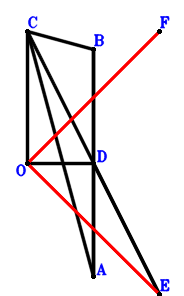
\(\because \) D is the midpoint of BA \(\therefore \small\overrightarrow{OD}=\dfrac{\small\overrightarrow{OA}}{2} + \dfrac{\small\overrightarrow{OB}}{2}\).\(\because \) D is the midpoint of CE \(\therefore \small\overrightarrow{OE}=- \small\overrightarrow{OC} + 2 \small\overrightarrow{OD}=\small\overrightarrow{OA} + \small\overrightarrow{OB} - \small\overrightarrow{OC}\).\(\because \) O, F are the orthocenter and circumcenter of △BCA \(\therefore \small\overrightarrow{OF}=\small\overrightarrow{OA} + \small\overrightarrow{OB} + \small\overrightarrow{OC}\).\(\because \) CO=2DO \( \therefore\small\overrightarrow{OC}^{2} - 4 \small\overrightarrow{OD}^{2}=\small\overrightarrow{OC}^{2} - 4 \left(\dfrac{\small\overrightarrow{OA}}{2} + \dfrac{\small\overrightarrow{OB}}{2}\right)^{2}=- \small\overrightarrow{OA}^{2} - 2 \small\overrightarrow{OA} \cdot \small\overrightarrow{OB} - \small\overrightarrow{OB}^{2} + \small\overrightarrow{OC}^{2}=0.\)In conclusion, \(\small\overrightarrow{OE} \cdot \small\overrightarrow{OF}=\left(\small\overrightarrow{OA} + \small\overrightarrow{OB} - \small\overrightarrow{OC}\right) \cdot \left(\small\overrightarrow{OA} + \small\overrightarrow{OB} + \small\overrightarrow{OC}\right)=\small\overrightarrow{OA}^{2} + 2 \small\overrightarrow{OA} \cdot \small\overrightarrow{OB} + \small\overrightarrow{OB}^{2} - \small\overrightarrow{OC}^{2}=0\), that is, FO⊥OE.
Exercise 1402： Let GAOF be a trapezoid with AO//GF and AO=2GF. F is the midpoint of BC. D is the midpoint of AB and EC. OC=2DO. Prove that EO⊥OG.
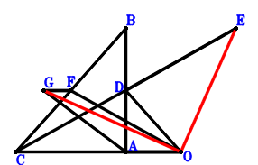
\(\because \) D is the midpoint of AB \(\therefore \small\overrightarrow{OD}=\dfrac{\small\overrightarrow{OA}}{2} + \dfrac{\small\overrightarrow{OB}}{2}\).\(\because \) D is the midpoint of EC \(\therefore \small\overrightarrow{OE}=- \small\overrightarrow{OC} + 2 \small\overrightarrow{OD}=\small\overrightarrow{OA} + \small\overrightarrow{OB} - \small\overrightarrow{OC}\).\(\because \) F is the midpoint of BC \(\therefore \small\overrightarrow{OF}=\dfrac{\small\overrightarrow{OB}}{2} + \dfrac{\small\overrightarrow{OC}}{2}\).\(\because \) AO//GF and AO=2GF \(\therefore \small\overrightarrow{OG}=\dfrac{\small\overrightarrow{OA}}{2} + \dfrac{\small\overrightarrow{OB}}{2} + \dfrac{\small\overrightarrow{OC}}{2}\).\(\because \) OC=2DO \( \therefore\small\overrightarrow{OC}^{2} - 4 \small\overrightarrow{OD}^{2}=\small\overrightarrow{OC}^{2} - 4 \left(\dfrac{\small\overrightarrow{OA}}{2} + \dfrac{\small\overrightarrow{OB}}{2}\right)^{2}=- \small\overrightarrow{OA}^{2} - 2 \small\overrightarrow{OA} \cdot \small\overrightarrow{OB} - \small\overrightarrow{OB}^{2} + \small\overrightarrow{OC}^{2}=0.\)In conclusion, \(\small\overrightarrow{OE} \cdot \small\overrightarrow{OG}=\left(\dfrac{\small\overrightarrow{OA}}{2} + \dfrac{\small\overrightarrow{OB}}{2} + \dfrac{\small\overrightarrow{OC}}{2}\right) \cdot \left(\small\overrightarrow{OA} + \small\overrightarrow{OB} - \small\overrightarrow{OC}\right)=\dfrac{\small\overrightarrow{OA}^{2}}{2} + \small\overrightarrow{OA} \cdot \small\overrightarrow{OB} + \dfrac{\small\overrightarrow{OB}^{2}}{2} - \dfrac{\small\overrightarrow{OC}^{2}}{2}=0\), that is, EO⊥OG.
Exercise 1404： Let F be the centroid of △ACB. D is the midpoint of AB and CE. CO=2OD. Prove that FO⊥OE.
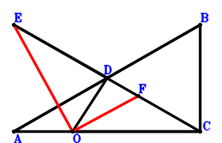
\(\because \) D is the midpoint of AB \(\therefore \small\overrightarrow{OD}=\dfrac{\small\overrightarrow{OA}}{2} + \dfrac{\small\overrightarrow{OB}}{2}\).\(\because \) D is the midpoint of CE \(\therefore \small\overrightarrow{OE}=- \small\overrightarrow{OC} + 2 \small\overrightarrow{OD}=\small\overrightarrow{OA} + \small\overrightarrow{OB} - \small\overrightarrow{OC}\).\(\because \) F is the centroid of △ACB \(\therefore \small\overrightarrow{OF}=\dfrac{\small\overrightarrow{OA}}{3} + \dfrac{\small\overrightarrow{OB}}{3} + \dfrac{\small\overrightarrow{OC}}{3}\).\(\because \) CO=2OD \( \therefore\small\overrightarrow{OC}^{2} - 4 \small\overrightarrow{OD}^{2}=\small\overrightarrow{OC}^{2} - 4 \left(\dfrac{\small\overrightarrow{OA}}{2} + \dfrac{\small\overrightarrow{OB}}{2}\right)^{2}=- \small\overrightarrow{OA}^{2} - 2 \small\overrightarrow{OA} \cdot \small\overrightarrow{OB} - \small\overrightarrow{OB}^{2} + \small\overrightarrow{OC}^{2}=0.\)In conclusion, \(\small\overrightarrow{OE} \cdot \small\overrightarrow{OF}=\left(\dfrac{\small\overrightarrow{OA}}{3} + \dfrac{\small\overrightarrow{OB}}{3} + \dfrac{\small\overrightarrow{OC}}{3}\right) \cdot \left(\small\overrightarrow{OA} + \small\overrightarrow{OB} - \small\overrightarrow{OC}\right)=\dfrac{\small\overrightarrow{OA}^{2}}{3} + \dfrac{2 \small\overrightarrow{OA} \cdot \small\overrightarrow{OB}}{3} + \dfrac{\small\overrightarrow{OB}^{2}}{3} - \dfrac{\small\overrightarrow{OC}^{2}}{3}=0\), that is, FO⊥OE.
Exercise 1434： Let DBOA and ECOB be parallelograms. F is the midpoint of EA. CO=DO. Prove that CD⊥FO.
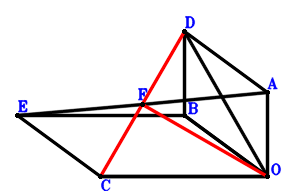
\(\because \) DBOA is a parallelogram \(\therefore \small\overrightarrow{OD}=\small\overrightarrow{OA} + \small\overrightarrow{OB}\).\(\because \) ECOB is a parallelogram \(\therefore \small\overrightarrow{OE}=\small\overrightarrow{OB} + \small\overrightarrow{OC}\).\(\because \) F is the midpoint of EA \(\therefore \small\overrightarrow{OF}=\dfrac{\small\overrightarrow{OA}}{2} + \dfrac{\small\overrightarrow{OE}}{2}=\dfrac{\small\overrightarrow{OA}}{2} + \dfrac{\small\overrightarrow{OB}}{2} + \dfrac{\small\overrightarrow{OC}}{2}\).\(\because \) CO=DO \( \therefore\small\overrightarrow{OC}^{2} - \small\overrightarrow{OD}^{2}=\small\overrightarrow{OC}^{2} - \left(\small\overrightarrow{OA} + \small\overrightarrow{OB}\right)^{2}=- \small\overrightarrow{OA}^{2} - 2 \small\overrightarrow{OA} \cdot \small\overrightarrow{OB} - \small\overrightarrow{OB}^{2} + \small\overrightarrow{OC}^{2}=0.\)In conclusion, \(\small\overrightarrow{CD} \cdot \small\overrightarrow{OF}=\small\overrightarrow{OF} \cdot \left(- \small\overrightarrow{OC} + \small\overrightarrow{OD}\right)=\left(\dfrac{\small\overrightarrow{OA}}{2} + \dfrac{\small\overrightarrow{OB}}{2} + \dfrac{\small\overrightarrow{OC}}{2}\right) \cdot \left(\small\overrightarrow{OA} + \small\overrightarrow{OB} - \small\overrightarrow{OC}\right)=\dfrac{\small\overrightarrow{OA}^{2}}{2} + \small\overrightarrow{OA} \cdot \small\overrightarrow{OB} + \dfrac{\small\overrightarrow{OB}^{2}}{2} - \dfrac{\small\overrightarrow{OC}^{2}}{2}=0\), that is, CD⊥FO.
Exercise 1441： Let DBOA, EBCA and GCOB be parallelograms. O is the midpoint of AF. CO=DO. Prove that OE⊥GF.
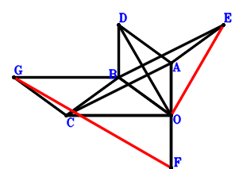
\(\because \) DBOA is a parallelogram \(\therefore \small\overrightarrow{OD}=\small\overrightarrow{OA} + \small\overrightarrow{OB}\).\(\because \) EBCA is a parallelogram \(\therefore \small\overrightarrow{OE}=\small\overrightarrow{OA} + \small\overrightarrow{OB} - \small\overrightarrow{OC}\).\(\because \) O is the midpoint of AF \(\therefore \small\overrightarrow{OF}=- \small\overrightarrow{OA}\).\(\because \) GCOB is a parallelogram \(\therefore \small\overrightarrow{OG}=\small\overrightarrow{OB} + \small\overrightarrow{OC}\).\(\because \) CO=DO \( \therefore\small\overrightarrow{OC}^{2} - \small\overrightarrow{OD}^{2}=\small\overrightarrow{OC}^{2} - \left(\small\overrightarrow{OA} + \small\overrightarrow{OB}\right)^{2}=- \small\overrightarrow{OA}^{2} - 2 \small\overrightarrow{OA} \cdot \small\overrightarrow{OB} - \small\overrightarrow{OB}^{2} + \small\overrightarrow{OC}^{2}=0.\)In conclusion, \(\small\overrightarrow{FG} \cdot \small\overrightarrow{OE}=\small\overrightarrow{OE} \cdot \left(- \small\overrightarrow{OF} + \small\overrightarrow{OG}\right)=\left(\small\overrightarrow{OA} + \small\overrightarrow{OB} - \small\overrightarrow{OC}\right) \cdot \left(\small\overrightarrow{OA} + \small\overrightarrow{OB} + \small\overrightarrow{OC}\right)=\small\overrightarrow{OA}^{2} + 2 \small\overrightarrow{OA} \cdot \small\overrightarrow{OB} + \small\overrightarrow{OB}^{2} - \small\overrightarrow{OC}^{2}=0\), that is, OE⊥GF.
Exercise 1454： Let DBOA and BCFO be parallelograms. O is the midpoint of CE. CO=DO. Prove that DE⊥FA.
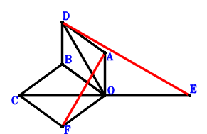
\(\because \) DBOA is a parallelogram \(\therefore \small\overrightarrow{OD}=\small\overrightarrow{OA} + \small\overrightarrow{OB}\).\(\because \) O is the midpoint of CE \(\therefore \small\overrightarrow{OE}=- \small\overrightarrow{OC}\).\(\because \) BCFO is a parallelogram \(\therefore \small\overrightarrow{OF}=- \small\overrightarrow{OB} + \small\overrightarrow{OC}\).\(\because \) CO=DO \( \therefore\small\overrightarrow{OC}^{2} - \small\overrightarrow{OD}^{2}=\small\overrightarrow{OC}^{2} - \left(\small\overrightarrow{OA} + \small\overrightarrow{OB}\right)^{2}=- \small\overrightarrow{OA}^{2} - 2 \small\overrightarrow{OA} \cdot \small\overrightarrow{OB} - \small\overrightarrow{OB}^{2} + \small\overrightarrow{OC}^{2}=0.\)In conclusion, \(\small\overrightarrow{ED} \cdot \small\overrightarrow{FA}=\left(\small\overrightarrow{OA} - \small\overrightarrow{OF}\right) \cdot \left(\small\overrightarrow{OD} - \small\overrightarrow{OE}\right)=\left(\small\overrightarrow{OA} + \small\overrightarrow{OB} - \small\overrightarrow{OC}\right) \cdot \left(\small\overrightarrow{OA} + \small\overrightarrow{OB} + \small\overrightarrow{OC}\right)=\small\overrightarrow{OA}^{2} + 2 \small\overrightarrow{OA} \cdot \small\overrightarrow{OB} + \small\overrightarrow{OB}^{2} - \small\overrightarrow{OC}^{2}=0\), that is, DE⊥FA.
Exercise 1470： Let ACHO and ADBO be parallelograms. O is the midpoint of CE. F is the midpoint of GE and BA. CO=DO. Prove that GO⊥HB.
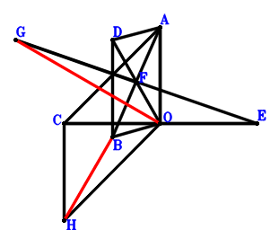
\(\because \) ADBO is a parallelogram \(\therefore \small\overrightarrow{OD}=\small\overrightarrow{OA} + \small\overrightarrow{OB}\).\(\because \) O is the midpoint of CE \(\therefore \small\overrightarrow{OE}=- \small\overrightarrow{OC}\).\(\because \) F is the midpoint of BA \(\therefore \small\overrightarrow{OF}=\dfrac{\small\overrightarrow{OA}}{2} + \dfrac{\small\overrightarrow{OB}}{2}\).\(\because \) F is the midpoint of GE \(\therefore \small\overrightarrow{OG}=\small\overrightarrow{OA} + \small\overrightarrow{OB} - \small\overrightarrow{OE}=\small\overrightarrow{OA} + \small\overrightarrow{OB} + \small\overrightarrow{OC}\).\(\because \) ACHO is a parallelogram \(\therefore \small\overrightarrow{OH}=- \small\overrightarrow{OA} + \small\overrightarrow{OC}\).\(\because \) CO=DO \( \therefore\small\overrightarrow{OC}^{2} - \small\overrightarrow{OD}^{2}=\small\overrightarrow{OC}^{2} - \left(\small\overrightarrow{OA} + \small\overrightarrow{OB}\right)^{2}=- \small\overrightarrow{OA}^{2} - 2 \small\overrightarrow{OA} \cdot \small\overrightarrow{OB} - \small\overrightarrow{OB}^{2} + \small\overrightarrow{OC}^{2}=0.\)In conclusion, \(\small\overrightarrow{HB} \cdot \small\overrightarrow{OG}=\small\overrightarrow{OG} \cdot \left(\small\overrightarrow{OB} - \small\overrightarrow{OH}\right)=\left(\small\overrightarrow{OA} + \small\overrightarrow{OB} - \small\overrightarrow{OC}\right) \cdot \left(\small\overrightarrow{OA} + \small\overrightarrow{OB} + \small\overrightarrow{OC}\right)=\small\overrightarrow{OA}^{2} + 2 \small\overrightarrow{OA} \cdot \small\overrightarrow{OB} + \small\overrightarrow{OB}^{2} - \small\overrightarrow{OC}^{2}=0\), that is, GO⊥HB.
Exercise 1528： Let DBOA, ECOA, ACGO and FEOB be parallelograms. CO=DO. Prove that FO⊥GB.
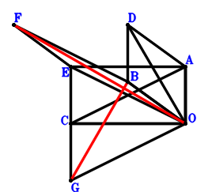
\(\because \) DBOA is a parallelogram \(\therefore \small\overrightarrow{OD}=\small\overrightarrow{OA} + \small\overrightarrow{OB}\).\(\because \) ECOA is a parallelogram \(\therefore \small\overrightarrow{OE}=\small\overrightarrow{OA} + \small\overrightarrow{OC}\).\(\because \) FEOB is a parallelogram \(\therefore \small\overrightarrow{OF}=\small\overrightarrow{OA} + \small\overrightarrow{OB} + \small\overrightarrow{OC}\).\(\because \) ACGO is a parallelogram \(\therefore \small\overrightarrow{OG}=- \small\overrightarrow{OA} + \small\overrightarrow{OC}\).\(\because \) CO=DO \( \therefore\small\overrightarrow{OC}^{2} - \small\overrightarrow{OD}^{2}=\small\overrightarrow{OC}^{2} - \left(\small\overrightarrow{OA} + \small\overrightarrow{OB}\right)^{2}=- \small\overrightarrow{OA}^{2} - 2 \small\overrightarrow{OA} \cdot \small\overrightarrow{OB} - \small\overrightarrow{OB}^{2} + \small\overrightarrow{OC}^{2}=0.\)In conclusion, \(\small\overrightarrow{GB} \cdot \small\overrightarrow{OF}=\small\overrightarrow{OF} \cdot \left(\small\overrightarrow{OB} - \small\overrightarrow{OG}\right)=\left(\small\overrightarrow{OA} + \small\overrightarrow{OB} - \small\overrightarrow{OC}\right) \cdot \left(\small\overrightarrow{OA} + \small\overrightarrow{OB} + \small\overrightarrow{OC}\right)=\small\overrightarrow{OA}^{2} + 2 \small\overrightarrow{OA} \cdot \small\overrightarrow{OB} + \small\overrightarrow{OB}^{2} - \small\overrightarrow{OC}^{2}=0\), that is, FO⊥GB.
Exercise 1541： Let BOAD be a parallelogram. FCOE is a trapezoid with CO//FE and CO=2FE. E is the midpoint of BA. CO=OD. Prove that CD⊥FO.
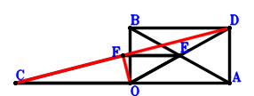
\(\because \) BOAD is a parallelogram \(\therefore \small\overrightarrow{OD}=\small\overrightarrow{OA} + \small\overrightarrow{OB}\).\(\because \) E is the midpoint of BA \(\therefore \small\overrightarrow{OE}=\dfrac{\small\overrightarrow{OA}}{2} + \dfrac{\small\overrightarrow{OB}}{2}\).\(\because \) CO//FE and CO=2FE \(\therefore \small\overrightarrow{OF}=\dfrac{\small\overrightarrow{OA}}{2} + \dfrac{\small\overrightarrow{OB}}{2} + \dfrac{\small\overrightarrow{OC}}{2}\).\(\because \) CO=OD \( \therefore\small\overrightarrow{OC}^{2} - \small\overrightarrow{OD}^{2}=\small\overrightarrow{OC}^{2} - \left(\small\overrightarrow{OA} + \small\overrightarrow{OB}\right)^{2}=- \small\overrightarrow{OA}^{2} - 2 \small\overrightarrow{OA} \cdot \small\overrightarrow{OB} - \small\overrightarrow{OB}^{2} + \small\overrightarrow{OC}^{2}=0.\)In conclusion, \(\small\overrightarrow{CD} \cdot \small\overrightarrow{OF}=\small\overrightarrow{OF} \cdot \left(- \small\overrightarrow{OC} + \small\overrightarrow{OD}\right)=\left(\dfrac{\small\overrightarrow{OA}}{2} + \dfrac{\small\overrightarrow{OB}}{2} + \dfrac{\small\overrightarrow{OC}}{2}\right) \cdot \left(\small\overrightarrow{OA} + \small\overrightarrow{OB} - \small\overrightarrow{OC}\right)=\dfrac{\small\overrightarrow{OA}^{2}}{2} + \small\overrightarrow{OA} \cdot \small\overrightarrow{OB} + \dfrac{\small\overrightarrow{OB}^{2}}{2} - \dfrac{\small\overrightarrow{OC}^{2}}{2}=0\), that is, CD⊥FO.
Exercise 1555： Let DBOA and BCGO be parallelograms. FEOA is a trapezoid with FA//EO and FA=2EO. E is the midpoint of CB. CO=DO. Prove that FO⊥GA.
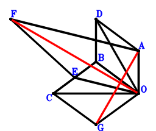
\(\because \) DBOA is a parallelogram \(\therefore \small\overrightarrow{OD}=\small\overrightarrow{OA} + \small\overrightarrow{OB}\).\(\because \) E is the midpoint of CB \(\therefore \small\overrightarrow{OE}=\dfrac{\small\overrightarrow{OB}}{2} + \dfrac{\small\overrightarrow{OC}}{2}\).\(\because \) FA//EO and FA=2EO \(\therefore \small\overrightarrow{OF}=\small\overrightarrow{OA} + 2 \small\overrightarrow{OE}=\small\overrightarrow{OA} + \small\overrightarrow{OB} + \small\overrightarrow{OC}\).\(\because \) BCGO is a parallelogram \(\therefore \small\overrightarrow{OG}=- \small\overrightarrow{OB} + \small\overrightarrow{OC}\).\(\because \) CO=DO \( \therefore\small\overrightarrow{OC}^{2} - \small\overrightarrow{OD}^{2}=\small\overrightarrow{OC}^{2} - \left(\small\overrightarrow{OA} + \small\overrightarrow{OB}\right)^{2}=- \small\overrightarrow{OA}^{2} - 2 \small\overrightarrow{OA} \cdot \small\overrightarrow{OB} - \small\overrightarrow{OB}^{2} + \small\overrightarrow{OC}^{2}=0.\)In conclusion, \(\small\overrightarrow{GA} \cdot \small\overrightarrow{OF}=\small\overrightarrow{OF} \cdot \left(\small\overrightarrow{OA} - \small\overrightarrow{OG}\right)=\left(\small\overrightarrow{OA} + \small\overrightarrow{OB} - \small\overrightarrow{OC}\right) \cdot \left(\small\overrightarrow{OA} + \small\overrightarrow{OB} + \small\overrightarrow{OC}\right)=\small\overrightarrow{OA}^{2} + 2 \small\overrightarrow{OA} \cdot \small\overrightarrow{OB} + \small\overrightarrow{OB}^{2} - \small\overrightarrow{OC}^{2}=0\), that is, FO⊥GA.
Exercise 1562： Let ADBO and ACEO be parallelograms. F is the centroid of △ACB. CO=DO. Prove that EB⊥FO.
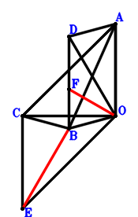
\(\because \) ADBO is a parallelogram \(\therefore \small\overrightarrow{OD}=\small\overrightarrow{OA} + \small\overrightarrow{OB}\).\(\because \) ACEO is a parallelogram \(\therefore \small\overrightarrow{OE}=- \small\overrightarrow{OA} + \small\overrightarrow{OC}\).\(\because \) F is the centroid of △ACB \(\therefore \small\overrightarrow{OF}=\dfrac{\small\overrightarrow{OA}}{3} + \dfrac{\small\overrightarrow{OB}}{3} + \dfrac{\small\overrightarrow{OC}}{3}\).\(\because \) CO=DO \( \therefore\small\overrightarrow{OC}^{2} - \small\overrightarrow{OD}^{2}=\small\overrightarrow{OC}^{2} - \left(\small\overrightarrow{OA} + \small\overrightarrow{OB}\right)^{2}=- \small\overrightarrow{OA}^{2} - 2 \small\overrightarrow{OA} \cdot \small\overrightarrow{OB} - \small\overrightarrow{OB}^{2} + \small\overrightarrow{OC}^{2}=0.\)In conclusion, \(\small\overrightarrow{EB} \cdot \small\overrightarrow{OF}=\small\overrightarrow{OF} \cdot \left(\small\overrightarrow{OB} - \small\overrightarrow{OE}\right)=\left(\dfrac{\small\overrightarrow{OA}}{3} + \dfrac{\small\overrightarrow{OB}}{3} + \dfrac{\small\overrightarrow{OC}}{3}\right) \cdot \left(\small\overrightarrow{OA} + \small\overrightarrow{OB} - \small\overrightarrow{OC}\right)=\dfrac{\small\overrightarrow{OA}^{2}}{3} + \dfrac{2 \small\overrightarrow{OA} \cdot \small\overrightarrow{OB}}{3} + \dfrac{\small\overrightarrow{OB}^{2}}{3} - \dfrac{\small\overrightarrow{OC}^{2}}{3}=0\), that is, EB⊥FO.
Exercise 1575： Let DBOA be a parallelogram. E, O, F are collinear and 2EF=3OF. E is the midpoint of CB. G is the midpoint of HA and CO. CO=DO. Prove that AF⊥HB.
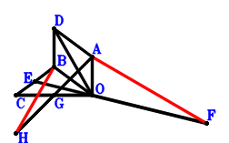
\(\because \) DBOA is a parallelogram \(\therefore \small\overrightarrow{OD}=\small\overrightarrow{OA} + \small\overrightarrow{OB}\).\(\because \) E is the midpoint of CB \(\therefore \small\overrightarrow{OE}=\dfrac{\small\overrightarrow{OB}}{2} + \dfrac{\small\overrightarrow{OC}}{2}\).\(\because \) E, O, F are collinear and 2EF=3OF \(\therefore \small\overrightarrow{OF}=- 2 \small\overrightarrow{OE}=- \small\overrightarrow{OB} - \small\overrightarrow{OC}\).\(\because \) G is the midpoint of CO \(\therefore \small\overrightarrow{OG}=\dfrac{\small\overrightarrow{OC}}{2}\).\(\because \) G is the midpoint of HA \(\therefore \small\overrightarrow{OH}=- \small\overrightarrow{OA} + 2 \small\overrightarrow{OG}=- \small\overrightarrow{OA} + \small\overrightarrow{OC}\).\(\because \) CO=DO \( \therefore\small\overrightarrow{OC}^{2} - \small\overrightarrow{OD}^{2}=\small\overrightarrow{OC}^{2} - \left(\small\overrightarrow{OA} + \small\overrightarrow{OB}\right)^{2}=- \small\overrightarrow{OA}^{2} - 2 \small\overrightarrow{OA} \cdot \small\overrightarrow{OB} - \small\overrightarrow{OB}^{2} + \small\overrightarrow{OC}^{2}=0.\)In conclusion, \(\small\overrightarrow{FA} \cdot \small\overrightarrow{HB}=\left(\small\overrightarrow{OA} - \small\overrightarrow{OF}\right) \cdot \left(\small\overrightarrow{OB} - \small\overrightarrow{OH}\right)=\left(\small\overrightarrow{OA} + \small\overrightarrow{OB} - \small\overrightarrow{OC}\right) \cdot \left(\small\overrightarrow{OA} + \small\overrightarrow{OB} + \small\overrightarrow{OC}\right)=\small\overrightarrow{OA}^{2} + 2 \small\overrightarrow{OA} \cdot \small\overrightarrow{OB} + \small\overrightarrow{OB}^{2} - \small\overrightarrow{OC}^{2}=0\), that is, AF⊥HB.
Exercise 1595： Let DBOA and GCOA be parallelograms. H is the midpoint of GB. E is the midpoint of CO and FA. CO=DO. Prove that FB⊥HO.
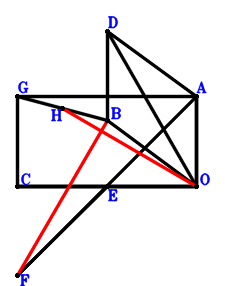
\(\because \) DBOA is a parallelogram \(\therefore \small\overrightarrow{OD}=\small\overrightarrow{OA} + \small\overrightarrow{OB}\).\(\because \) E is the midpoint of CO \(\therefore \small\overrightarrow{OE}=\dfrac{\small\overrightarrow{OC}}{2}\).\(\because \) E is the midpoint of FA \(\therefore \small\overrightarrow{OF}=- \small\overrightarrow{OA} + 2 \small\overrightarrow{OE}=- \small\overrightarrow{OA} + \small\overrightarrow{OC}\).\(\because \) GCOA is a parallelogram \(\therefore \small\overrightarrow{OG}=\small\overrightarrow{OA} + \small\overrightarrow{OC}\).\(\because \) H is the midpoint of GB \(\therefore \small\overrightarrow{OH}=\dfrac{\small\overrightarrow{OB}}{2} + \dfrac{\small\overrightarrow{OG}}{2}=\dfrac{\small\overrightarrow{OA}}{2} + \dfrac{\small\overrightarrow{OB}}{2} + \dfrac{\small\overrightarrow{OC}}{2}\).\(\because \) CO=DO \( \therefore\small\overrightarrow{OC}^{2} - \small\overrightarrow{OD}^{2}=\small\overrightarrow{OC}^{2} - \left(\small\overrightarrow{OA} + \small\overrightarrow{OB}\right)^{2}=- \small\overrightarrow{OA}^{2} - 2 \small\overrightarrow{OA} \cdot \small\overrightarrow{OB} - \small\overrightarrow{OB}^{2} + \small\overrightarrow{OC}^{2}=0.\)In conclusion, \(\small\overrightarrow{FB} \cdot \small\overrightarrow{OH}=\small\overrightarrow{OH} \cdot \left(\small\overrightarrow{OB} - \small\overrightarrow{OF}\right)=\left(\dfrac{\small\overrightarrow{OA}}{2} + \dfrac{\small\overrightarrow{OB}}{2} + \dfrac{\small\overrightarrow{OC}}{2}\right) \cdot \left(\small\overrightarrow{OA} + \small\overrightarrow{OB} - \small\overrightarrow{OC}\right)=\dfrac{\small\overrightarrow{OA}^{2}}{2} + \small\overrightarrow{OA} \cdot \small\overrightarrow{OB} + \dfrac{\small\overrightarrow{OB}^{2}}{2} - \dfrac{\small\overrightarrow{OC}^{2}}{2}=0\), that is, FB⊥HO.
Exercise 1604： Let DBOA and BEFO be parallelograms. H, O, G are the midpoints of BA, AE, OC, respectively. OC=DO. Prove that FC⊥HG.
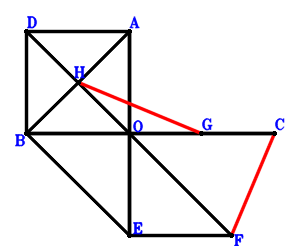
\(\because \) DBOA is a parallelogram \(\therefore \small\overrightarrow{OD}=\small\overrightarrow{OA} + \small\overrightarrow{OB}\).\(\because \) O is the midpoint of AE \(\therefore \small\overrightarrow{OE}=- \small\overrightarrow{OA}\).\(\because \) BEFO is a parallelogram \(\therefore \small\overrightarrow{OF}=- \small\overrightarrow{OA} - \small\overrightarrow{OB}\).\(\because \) G is the midpoint of OC \(\therefore \small\overrightarrow{OG}=\dfrac{\small\overrightarrow{OC}}{2}\).\(\because \) H is the midpoint of BA \(\therefore \small\overrightarrow{OH}=\dfrac{\small\overrightarrow{OA}}{2} + \dfrac{\small\overrightarrow{OB}}{2}\).\(\because \) OC=DO \( \therefore\small\overrightarrow{OC}^{2} - \small\overrightarrow{OD}^{2}=\small\overrightarrow{OC}^{2} - \left(\small\overrightarrow{OA} + \small\overrightarrow{OB}\right)^{2}=- \small\overrightarrow{OA}^{2} - 2 \small\overrightarrow{OA} \cdot \small\overrightarrow{OB} - \small\overrightarrow{OB}^{2} + \small\overrightarrow{OC}^{2}=0.\)In conclusion, \(\small\overrightarrow{FC} \cdot \small\overrightarrow{GH}=\left(\small\overrightarrow{OC} - \small\overrightarrow{OF}\right) \cdot \left(- \small\overrightarrow{OG} + \small\overrightarrow{OH}\right)=\left(\dfrac{\small\overrightarrow{OA}}{2} + \dfrac{\small\overrightarrow{OB}}{2} - \dfrac{\small\overrightarrow{OC}}{2}\right) \cdot \left(\small\overrightarrow{OA} + \small\overrightarrow{OB} + \small\overrightarrow{OC}\right)=\dfrac{\small\overrightarrow{OA}^{2}}{2} + \small\overrightarrow{OA} \cdot \small\overrightarrow{OB} + \dfrac{\small\overrightarrow{OB}^{2}}{2} - \dfrac{\small\overrightarrow{OC}^{2}}{2}=0\), that is, FC⊥HG.
Exercise 1613： Let BDAO be a parallelogram. O, E are the orthocenter and circumcenter of △BAC. F is the midpoint of AG and OC. OC=DO. Prove that OE⊥BG.
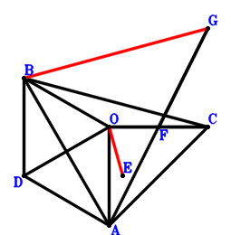
\(\because \) BDAO is a parallelogram \(\therefore \small\overrightarrow{OD}=\small\overrightarrow{OA} + \small\overrightarrow{OB}\).\(\because \) O, E are the orthocenter and circumcenter of △BAC \(\therefore \small\overrightarrow{OE}=\small\overrightarrow{OA} + \small\overrightarrow{OB} + \small\overrightarrow{OC}\).\(\because \) F is the midpoint of OC \(\therefore \small\overrightarrow{OF}=\dfrac{\small\overrightarrow{OC}}{2}\).\(\because \) F is the midpoint of AG \(\therefore \small\overrightarrow{OG}=- \small\overrightarrow{OA} + 2 \small\overrightarrow{OF}=- \small\overrightarrow{OA} + \small\overrightarrow{OC}\).\(\because \) OC=DO \( \therefore\small\overrightarrow{OC}^{2} - \small\overrightarrow{OD}^{2}=\small\overrightarrow{OC}^{2} - \left(\small\overrightarrow{OA} + \small\overrightarrow{OB}\right)^{2}=- \small\overrightarrow{OA}^{2} - 2 \small\overrightarrow{OA} \cdot \small\overrightarrow{OB} - \small\overrightarrow{OB}^{2} + \small\overrightarrow{OC}^{2}=0.\)In conclusion, \(\small\overrightarrow{GB} \cdot \small\overrightarrow{OE}=\small\overrightarrow{OE} \cdot \left(\small\overrightarrow{OB} - \small\overrightarrow{OG}\right)=\left(\small\overrightarrow{OA} + \small\overrightarrow{OB} - \small\overrightarrow{OC}\right) \cdot \left(\small\overrightarrow{OA} + \small\overrightarrow{OB} + \small\overrightarrow{OC}\right)=\small\overrightarrow{OA}^{2} + 2 \small\overrightarrow{OA} \cdot \small\overrightarrow{OB} + \small\overrightarrow{OB}^{2} - \small\overrightarrow{OC}^{2}=0\), that is, OE⊥BG.
Exercise 1690： Let ADBO be a parallelogram. EFBO is a trapezoid with FB//EO and FB=2EO. E is the midpoint of CA. G is the midpoint of HA and CO. CO=DO. Prove that FO⊥HB.
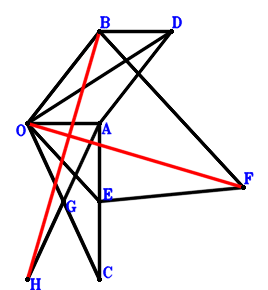
\(\because \) ADBO is a parallelogram \(\therefore \small\overrightarrow{OD}=\small\overrightarrow{OA} + \small\overrightarrow{OB}\).\(\because \) E is the midpoint of CA \(\therefore \small\overrightarrow{OE}=\dfrac{\small\overrightarrow{OA}}{2} + \dfrac{\small\overrightarrow{OC}}{2}\).\(\because \) FB//EO and FB=2EO \(\therefore \small\overrightarrow{OF}=\small\overrightarrow{OB} + 2 \small\overrightarrow{OE}=\small\overrightarrow{OA} + \small\overrightarrow{OB} + \small\overrightarrow{OC}\).\(\because \) G is the midpoint of CO \(\therefore \small\overrightarrow{OG}=\dfrac{\small\overrightarrow{OC}}{2}\).\(\because \) G is the midpoint of HA \(\therefore \small\overrightarrow{OH}=- \small\overrightarrow{OA} + 2 \small\overrightarrow{OG}=- \small\overrightarrow{OA} + \small\overrightarrow{OC}\).\(\because \) CO=DO \( \therefore\small\overrightarrow{OC}^{2} - \small\overrightarrow{OD}^{2}=\small\overrightarrow{OC}^{2} - \left(\small\overrightarrow{OA} + \small\overrightarrow{OB}\right)^{2}=- \small\overrightarrow{OA}^{2} - 2 \small\overrightarrow{OA} \cdot \small\overrightarrow{OB} - \small\overrightarrow{OB}^{2} + \small\overrightarrow{OC}^{2}=0.\)In conclusion, \(\small\overrightarrow{HB} \cdot \small\overrightarrow{OF}=\small\overrightarrow{OF} \cdot \left(\small\overrightarrow{OB} - \small\overrightarrow{OH}\right)=\left(\small\overrightarrow{OA} + \small\overrightarrow{OB} - \small\overrightarrow{OC}\right) \cdot \left(\small\overrightarrow{OA} + \small\overrightarrow{OB} + \small\overrightarrow{OC}\right)=\small\overrightarrow{OA}^{2} + 2 \small\overrightarrow{OA} \cdot \small\overrightarrow{OB} + \small\overrightarrow{OB}^{2} - \small\overrightarrow{OC}^{2}=0\), that is, FO⊥HB.
Exercise 1702： Let DBOA be a parallelogram. G is the centroid of △ABC. E is the midpoint of OC and AF. OC=DO. Prove that BF⊥OG.
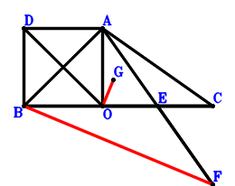
\(\because \) DBOA is a parallelogram \(\therefore \small\overrightarrow{OD}=\small\overrightarrow{OA} + \small\overrightarrow{OB}\).\(\because \) E is the midpoint of OC \(\therefore \small\overrightarrow{OE}=\dfrac{\small\overrightarrow{OC}}{2}\).\(\because \) E is the midpoint of AF \(\therefore \small\overrightarrow{OF}=- \small\overrightarrow{OA} + 2 \small\overrightarrow{OE}=- \small\overrightarrow{OA} + \small\overrightarrow{OC}\).\(\because \) G is the centroid of △ABC \(\therefore \small\overrightarrow{OG}=\dfrac{\small\overrightarrow{OA}}{3} + \dfrac{\small\overrightarrow{OB}}{3} + \dfrac{\small\overrightarrow{OC}}{3}\).\(\because \) OC=DO \( \therefore\small\overrightarrow{OC}^{2} - \small\overrightarrow{OD}^{2}=\small\overrightarrow{OC}^{2} - \left(\small\overrightarrow{OA} + \small\overrightarrow{OB}\right)^{2}=- \small\overrightarrow{OA}^{2} - 2 \small\overrightarrow{OA} \cdot \small\overrightarrow{OB} - \small\overrightarrow{OB}^{2} + \small\overrightarrow{OC}^{2}=0.\)In conclusion, \(\small\overrightarrow{FB} \cdot \small\overrightarrow{OG}=\small\overrightarrow{OG} \cdot \left(\small\overrightarrow{OB} - \small\overrightarrow{OF}\right)=\left(\dfrac{\small\overrightarrow{OA}}{3} + \dfrac{\small\overrightarrow{OB}}{3} + \dfrac{\small\overrightarrow{OC}}{3}\right) \cdot \left(\small\overrightarrow{OA} + \small\overrightarrow{OB} - \small\overrightarrow{OC}\right)=\dfrac{\small\overrightarrow{OA}^{2}}{3} + \dfrac{2 \small\overrightarrow{OA} \cdot \small\overrightarrow{OB}}{3} + \dfrac{\small\overrightarrow{OB}^{2}}{3} - \dfrac{\small\overrightarrow{OC}^{2}}{3}=0\), that is, BF⊥OG.
Exercise 1706： Let DBOA and ACGO be parallelograms. B, O, E are collinear and BE=3OE. E is the midpoint of CF. CO=DO. Prove that AF⊥GB.
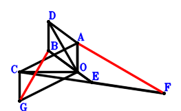
\(\because \) DBOA is a parallelogram \(\therefore \small\overrightarrow{OD}=\small\overrightarrow{OA} + \small\overrightarrow{OB}\).\(\because \) B, O, E are collinear and BE=3OE \(\therefore \small\overrightarrow{OE}=- \dfrac{\small\overrightarrow{OB}}{2}\).\(\because \) E is the midpoint of CF \(\therefore \small\overrightarrow{OF}=- \small\overrightarrow{OC} + 2 \small\overrightarrow{OE}=- \small\overrightarrow{OB} - \small\overrightarrow{OC}\).\(\because \) ACGO is a parallelogram \(\therefore \small\overrightarrow{OG}=- \small\overrightarrow{OA} + \small\overrightarrow{OC}\).\(\because \) CO=DO \( \therefore\small\overrightarrow{OC}^{2} - \small\overrightarrow{OD}^{2}=\small\overrightarrow{OC}^{2} - \left(\small\overrightarrow{OA} + \small\overrightarrow{OB}\right)^{2}=- \small\overrightarrow{OA}^{2} - 2 \small\overrightarrow{OA} \cdot \small\overrightarrow{OB} - \small\overrightarrow{OB}^{2} + \small\overrightarrow{OC}^{2}=0.\)In conclusion, \(\small\overrightarrow{FA} \cdot \small\overrightarrow{GB}=\left(\small\overrightarrow{OA} - \small\overrightarrow{OF}\right) \cdot \left(\small\overrightarrow{OB} - \small\overrightarrow{OG}\right)=\left(\small\overrightarrow{OA} + \small\overrightarrow{OB} - \small\overrightarrow{OC}\right) \cdot \left(\small\overrightarrow{OA} + \small\overrightarrow{OB} + \small\overrightarrow{OC}\right)=\small\overrightarrow{OA}^{2} + 2 \small\overrightarrow{OA} \cdot \small\overrightarrow{OB} + \small\overrightarrow{OB}^{2} - \small\overrightarrow{OC}^{2}=0\), that is, AF⊥GB.
Exercise 1711： Let ACGO and ADBO be parallelograms. C, O, E are collinear and CE=3OE. E is the midpoint of AF. CO=DO. Prove that GB⊥BF.
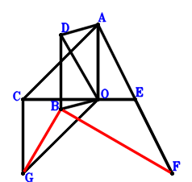
\(\because \) ADBO is a parallelogram \(\therefore \small\overrightarrow{OD}=\small\overrightarrow{OA} + \small\overrightarrow{OB}\).\(\because \) C, O, E are collinear and CE=3OE \(\therefore \small\overrightarrow{OE}=- \dfrac{\small\overrightarrow{OC}}{2}\).\(\because \) E is the midpoint of AF \(\therefore \small\overrightarrow{OF}=- \small\overrightarrow{OA} + 2 \small\overrightarrow{OE}=- \small\overrightarrow{OA} - \small\overrightarrow{OC}\).\(\because \) ACGO is a parallelogram \(\therefore \small\overrightarrow{OG}=- \small\overrightarrow{OA} + \small\overrightarrow{OC}\).\(\because \) CO=DO \( \therefore\small\overrightarrow{OC}^{2} - \small\overrightarrow{OD}^{2}=\small\overrightarrow{OC}^{2} - \left(\small\overrightarrow{OA} + \small\overrightarrow{OB}\right)^{2}=- \small\overrightarrow{OA}^{2} - 2 \small\overrightarrow{OA} \cdot \small\overrightarrow{OB} - \small\overrightarrow{OB}^{2} + \small\overrightarrow{OC}^{2}=0.\)In conclusion, \(\small\overrightarrow{FB} \cdot \small\overrightarrow{GB}=\left(\small\overrightarrow{OB} - \small\overrightarrow{OF}\right) \cdot \left(\small\overrightarrow{OB} - \small\overrightarrow{OG}\right)=\left(\small\overrightarrow{OA} + \small\overrightarrow{OB} - \small\overrightarrow{OC}\right) \cdot \left(\small\overrightarrow{OA} + \small\overrightarrow{OB} + \small\overrightarrow{OC}\right)=\small\overrightarrow{OA}^{2} + 2 \small\overrightarrow{OA} \cdot \small\overrightarrow{OB} + \small\overrightarrow{OB}^{2} - \small\overrightarrow{OC}^{2}=0\), that is, GB⊥BF.
Exercise 1717： Let AOBD and AGCH be parallelograms. O is the midpoint of GB. E is the midpoint of CF and AB. CO=OD. Prove that HO⊥OF.
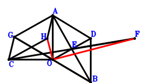
\(\because \) AOBD is a parallelogram \(\therefore \small\overrightarrow{OD}=\small\overrightarrow{OA} + \small\overrightarrow{OB}\).\(\because \) E is the midpoint of AB \(\therefore \small\overrightarrow{OE}=\dfrac{\small\overrightarrow{OA}}{2} + \dfrac{\small\overrightarrow{OB}}{2}\).\(\because \) E is the midpoint of CF \(\therefore \small\overrightarrow{OF}=- \small\overrightarrow{OC} + 2 \small\overrightarrow{OE}=\small\overrightarrow{OA} + \small\overrightarrow{OB} - \small\overrightarrow{OC}\).\(\because \) O is the midpoint of GB \(\therefore \small\overrightarrow{OG}=- \small\overrightarrow{OB}\).\(\because \) AGCH is a parallelogram \(\therefore \small\overrightarrow{OH}=\small\overrightarrow{OA} + \small\overrightarrow{OC} - \small\overrightarrow{OG}=\small\overrightarrow{OA} + \small\overrightarrow{OB} + \small\overrightarrow{OC}\).\(\because \) CO=OD \( \therefore\small\overrightarrow{OC}^{2} - \small\overrightarrow{OD}^{2}=\small\overrightarrow{OC}^{2} - \left(\small\overrightarrow{OA} + \small\overrightarrow{OB}\right)^{2}=- \small\overrightarrow{OA}^{2} - 2 \small\overrightarrow{OA} \cdot \small\overrightarrow{OB} - \small\overrightarrow{OB}^{2} + \small\overrightarrow{OC}^{2}=0.\)In conclusion, \(\small\overrightarrow{OF} \cdot \small\overrightarrow{OH}=\left(\small\overrightarrow{OA} + \small\overrightarrow{OB} - \small\overrightarrow{OC}\right) \cdot \left(\small\overrightarrow{OA} + \small\overrightarrow{OB} + \small\overrightarrow{OC}\right)=\small\overrightarrow{OA}^{2} + 2 \small\overrightarrow{OA} \cdot \small\overrightarrow{OB} + \small\overrightarrow{OB}^{2} - \small\overrightarrow{OC}^{2}=0\), that is, HO⊥OF.
Exercise 1728： Let DBOA and AOFE be parallelograms. O is the midpoint of BE. OC=DO. Prove that DC⊥CF.
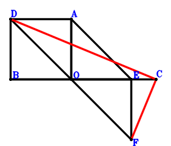
\(\because \) DBOA is a parallelogram \(\therefore \small\overrightarrow{OD}=\small\overrightarrow{OA} + \small\overrightarrow{OB}\).\(\because \) O is the midpoint of BE \(\therefore \small\overrightarrow{OE}=- \small\overrightarrow{OB}\).\(\because \) AOFE is a parallelogram \(\therefore \small\overrightarrow{OF}=- \small\overrightarrow{OA} - \small\overrightarrow{OB}\).\(\because \) OC=DO \( \therefore\small\overrightarrow{OC}^{2} - \small\overrightarrow{OD}^{2}=\small\overrightarrow{OC}^{2} - \left(\small\overrightarrow{OA} + \small\overrightarrow{OB}\right)^{2}=- \small\overrightarrow{OA}^{2} - 2 \small\overrightarrow{OA} \cdot \small\overrightarrow{OB} - \small\overrightarrow{OB}^{2} + \small\overrightarrow{OC}^{2}=0.\)In conclusion, \(\small\overrightarrow{CD} \cdot \small\overrightarrow{FC}=\left(- \small\overrightarrow{OC} + \small\overrightarrow{OD}\right) \cdot \left(\small\overrightarrow{OC} - \small\overrightarrow{OF}\right)=\left(\small\overrightarrow{OA} + \small\overrightarrow{OB} - \small\overrightarrow{OC}\right) \cdot \left(\small\overrightarrow{OA} + \small\overrightarrow{OB} + \small\overrightarrow{OC}\right)=\small\overrightarrow{OA}^{2} + 2 \small\overrightarrow{OA} \cdot \small\overrightarrow{OB} + \small\overrightarrow{OB}^{2} - \small\overrightarrow{OC}^{2}=0\), that is, DC⊥CF.
Exercise 1733： Let ACBG, AOBD and AECF be parallelograms. O is the midpoint of EB. CO=OD. Prove that FO⊥OG.
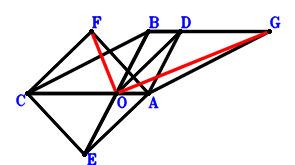
\(\because \) AOBD is a parallelogram \(\therefore \small\overrightarrow{OD}=\small\overrightarrow{OA} + \small\overrightarrow{OB}\).\(\because \) O is the midpoint of EB \(\therefore \small\overrightarrow{OE}=- \small\overrightarrow{OB}\).\(\because \) AECF is a parallelogram \(\therefore \small\overrightarrow{OF}=\small\overrightarrow{OA} + \small\overrightarrow{OC} - \small\overrightarrow{OE}=\small\overrightarrow{OA} + \small\overrightarrow{OB} + \small\overrightarrow{OC}\).\(\because \) ACBG is a parallelogram \(\therefore \small\overrightarrow{OG}=\small\overrightarrow{OA} + \small\overrightarrow{OB} - \small\overrightarrow{OC}\).\(\because \) CO=OD \( \therefore\small\overrightarrow{OC}^{2} - \small\overrightarrow{OD}^{2}=\small\overrightarrow{OC}^{2} - \left(\small\overrightarrow{OA} + \small\overrightarrow{OB}\right)^{2}=- \small\overrightarrow{OA}^{2} - 2 \small\overrightarrow{OA} \cdot \small\overrightarrow{OB} - \small\overrightarrow{OB}^{2} + \small\overrightarrow{OC}^{2}=0.\)In conclusion, \(\small\overrightarrow{OF} \cdot \small\overrightarrow{OG}=\left(\small\overrightarrow{OA} + \small\overrightarrow{OB} - \small\overrightarrow{OC}\right) \cdot \left(\small\overrightarrow{OA} + \small\overrightarrow{OB} + \small\overrightarrow{OC}\right)=\small\overrightarrow{OA}^{2} + 2 \small\overrightarrow{OA} \cdot \small\overrightarrow{OB} + \small\overrightarrow{OB}^{2} - \small\overrightarrow{OC}^{2}=0\), that is, FO⊥OG.
Exercise 1738： Let DBOA be a parallelogram. B, O, E are collinear and BE=3OE. E is the midpoint of CF. G is the midpoint of CO and BH. CO=DO. Prove that HA⊥AF.
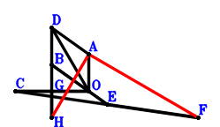
\(\because \) DBOA is a parallelogram \(\therefore \small\overrightarrow{OD}=\small\overrightarrow{OA} + \small\overrightarrow{OB}\).\(\because \) B, O, E are collinear and BE=3OE \(\therefore \small\overrightarrow{OE}=- \dfrac{\small\overrightarrow{OB}}{2}\).\(\because \) E is the midpoint of CF \(\therefore \small\overrightarrow{OF}=- \small\overrightarrow{OC} + 2 \small\overrightarrow{OE}=- \small\overrightarrow{OB} - \small\overrightarrow{OC}\).\(\because \) G is the midpoint of CO \(\therefore \small\overrightarrow{OG}=\dfrac{\small\overrightarrow{OC}}{2}\).\(\because \) G is the midpoint of BH \(\therefore \small\overrightarrow{OH}=- \small\overrightarrow{OB} + 2 \small\overrightarrow{OG}=- \small\overrightarrow{OB} + \small\overrightarrow{OC}\).\(\because \) CO=DO \( \therefore\small\overrightarrow{OC}^{2} - \small\overrightarrow{OD}^{2}=\small\overrightarrow{OC}^{2} - \left(\small\overrightarrow{OA} + \small\overrightarrow{OB}\right)^{2}=- \small\overrightarrow{OA}^{2} - 2 \small\overrightarrow{OA} \cdot \small\overrightarrow{OB} - \small\overrightarrow{OB}^{2} + \small\overrightarrow{OC}^{2}=0.\)In conclusion, \(\small\overrightarrow{FA} \cdot \small\overrightarrow{HA}=\left(\small\overrightarrow{OA} - \small\overrightarrow{OF}\right) \cdot \left(\small\overrightarrow{OA} - \small\overrightarrow{OH}\right)=\left(\small\overrightarrow{OA} + \small\overrightarrow{OB} - \small\overrightarrow{OC}\right) \cdot \left(\small\overrightarrow{OA} + \small\overrightarrow{OB} + \small\overrightarrow{OC}\right)=\small\overrightarrow{OA}^{2} + 2 \small\overrightarrow{OA} \cdot \small\overrightarrow{OB} + \small\overrightarrow{OB}^{2} - \small\overrightarrow{OC}^{2}=0\), that is, HA⊥AF.
Exercise 1759： Let DBOA and ECOB be parallelograms. O is the midpoint of EF. G is the midpoint of CO and BH. CO=DO. Prove that HA⊥AF.
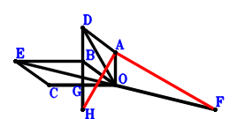
\(\because \) DBOA is a parallelogram \(\therefore \small\overrightarrow{OD}=\small\overrightarrow{OA} + \small\overrightarrow{OB}\).\(\because \) ECOB is a parallelogram \(\therefore \small\overrightarrow{OE}=\small\overrightarrow{OB} + \small\overrightarrow{OC}\).\(\because \) O is the midpoint of EF \(\therefore \small\overrightarrow{OF}=- \small\overrightarrow{OE}=- \small\overrightarrow{OB} - \small\overrightarrow{OC}\).\(\because \) G is the midpoint of CO \(\therefore \small\overrightarrow{OG}=\dfrac{\small\overrightarrow{OC}}{2}\).\(\because \) G is the midpoint of BH \(\therefore \small\overrightarrow{OH}=- \small\overrightarrow{OB} + 2 \small\overrightarrow{OG}=- \small\overrightarrow{OB} + \small\overrightarrow{OC}\).\(\because \) CO=DO \( \therefore\small\overrightarrow{OC}^{2} - \small\overrightarrow{OD}^{2}=\small\overrightarrow{OC}^{2} - \left(\small\overrightarrow{OA} + \small\overrightarrow{OB}\right)^{2}=- \small\overrightarrow{OA}^{2} - 2 \small\overrightarrow{OA} \cdot \small\overrightarrow{OB} - \small\overrightarrow{OB}^{2} + \small\overrightarrow{OC}^{2}=0.\)In conclusion, \(\small\overrightarrow{FA} \cdot \small\overrightarrow{HA}=\left(\small\overrightarrow{OA} - \small\overrightarrow{OF}\right) \cdot \left(\small\overrightarrow{OA} - \small\overrightarrow{OH}\right)=\left(\small\overrightarrow{OA} + \small\overrightarrow{OB} - \small\overrightarrow{OC}\right) \cdot \left(\small\overrightarrow{OA} + \small\overrightarrow{OB} + \small\overrightarrow{OC}\right)=\small\overrightarrow{OA}^{2} + 2 \small\overrightarrow{OA} \cdot \small\overrightarrow{OB} + \small\overrightarrow{OB}^{2} - \small\overrightarrow{OC}^{2}=0\), that is, HA⊥AF.
Exercise 1776： Let ACBE and ADBO be parallelograms. F, G, B are collinear and GB=2FG. F is the midpoint of CA. CO=DO. Prove that GO⊥OE.
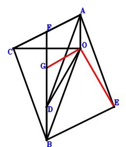
\(\because \) ADBO is a parallelogram \(\therefore \small\overrightarrow{OD}=\small\overrightarrow{OA} + \small\overrightarrow{OB}\).\(\because \) ACBE is a parallelogram \(\therefore \small\overrightarrow{OE}=\small\overrightarrow{OA} + \small\overrightarrow{OB} - \small\overrightarrow{OC}\).\(\because \) F is the midpoint of CA \(\therefore \small\overrightarrow{OF}=\dfrac{\small\overrightarrow{OA}}{2} + \dfrac{\small\overrightarrow{OC}}{2}\).\(\because \) F, G, B are collinear and GB=2FG \(\therefore \small\overrightarrow{OG}=\dfrac{\small\overrightarrow{OB}}{3} + \dfrac{2 \small\overrightarrow{OF}}{3}=\dfrac{\small\overrightarrow{OA}}{3} + \dfrac{\small\overrightarrow{OB}}{3} + \dfrac{\small\overrightarrow{OC}}{3}\).\(\because \) CO=DO \( \therefore\small\overrightarrow{OC}^{2} - \small\overrightarrow{OD}^{2}=\small\overrightarrow{OC}^{2} - \left(\small\overrightarrow{OA} + \small\overrightarrow{OB}\right)^{2}=- \small\overrightarrow{OA}^{2} - 2 \small\overrightarrow{OA} \cdot \small\overrightarrow{OB} - \small\overrightarrow{OB}^{2} + \small\overrightarrow{OC}^{2}=0.\)In conclusion, \(\small\overrightarrow{OE} \cdot \small\overrightarrow{OG}=\left(\dfrac{\small\overrightarrow{OA}}{3} + \dfrac{\small\overrightarrow{OB}}{3} + \dfrac{\small\overrightarrow{OC}}{3}\right) \cdot \left(\small\overrightarrow{OA} + \small\overrightarrow{OB} - \small\overrightarrow{OC}\right)=\dfrac{\small\overrightarrow{OA}^{2}}{3} + \dfrac{2 \small\overrightarrow{OA} \cdot \small\overrightarrow{OB}}{3} + \dfrac{\small\overrightarrow{OB}^{2}}{3} - \dfrac{\small\overrightarrow{OC}^{2}}{3}=0\), that is, GO⊥OE.
Exercise 1784： Let DBOA and EBCA be parallelograms. F is the midpoint of CD. CO=DO. Prove that FO⊥OE.
\(\because \) DBOA is a parallelogram \(\therefore \small\overrightarrow{OD}=\small\overrightarrow{OA} + \small\overrightarrow{OB}\).\(\because \) EBCA is a parallelogram \(\therefore \small\overrightarrow{OE}=\small\overrightarrow{OA} + \small\overrightarrow{OB} - \small\overrightarrow{OC}\).\(\because \) F is the midpoint of CD \(\therefore \small\overrightarrow{OF}=\dfrac{\small\overrightarrow{OC}}{2} + \dfrac{\small\overrightarrow{OD}}{2}=\dfrac{\small\overrightarrow{OA}}{2} + \dfrac{\small\overrightarrow{OB}}{2} + \dfrac{\small\overrightarrow{OC}}{2}\).\(\because \) CO=DO \( \therefore\small\overrightarrow{OC}^{2} - \small\overrightarrow{OD}^{2}=\small\overrightarrow{OC}^{2} - \left(\small\overrightarrow{OA} + \small\overrightarrow{OB}\right)^{2}=- \small\overrightarrow{OA}^{2} - 2 \small\overrightarrow{OA} \cdot \small\overrightarrow{OB} - \small\overrightarrow{OB}^{2} + \small\overrightarrow{OC}^{2}=0.\)In conclusion, \(\small\overrightarrow{OE} \cdot \small\overrightarrow{OF}=\left(\dfrac{\small\overrightarrow{OA}}{2} + \dfrac{\small\overrightarrow{OB}}{2} + \dfrac{\small\overrightarrow{OC}}{2}\right) \cdot \left(\small\overrightarrow{OA} + \small\overrightarrow{OB} - \small\overrightarrow{OC}\right)=\dfrac{\small\overrightarrow{OA}^{2}}{2} + \small\overrightarrow{OA} \cdot \small\overrightarrow{OB} + \dfrac{\small\overrightarrow{OB}^{2}}{2} - \dfrac{\small\overrightarrow{OC}^{2}}{2}=0\), that is, FO⊥OE.
Exercise 1790： Let DBOA and GCOB be parallelograms. H is the midpoint of GA. E is the midpoint of BA and CF. CO=DO. Prove that HO⊥OF.
\(\because \) DBOA is a parallelogram \(\therefore \small\overrightarrow{OD}=\small\overrightarrow{OA} + \small\overrightarrow{OB}\).\(\because \) E is the midpoint of BA \(\therefore \small\overrightarrow{OE}=\dfrac{\small\overrightarrow{OA}}{2} + \dfrac{\small\overrightarrow{OB}}{2}\).\(\because \) E is the midpoint of CF \(\therefore \small\overrightarrow{OF}=- \small\overrightarrow{OC} + 2 \small\overrightarrow{OE}=\small\overrightarrow{OA} + \small\overrightarrow{OB} - \small\overrightarrow{OC}\).\(\because \) GCOB is a parallelogram \(\therefore \small\overrightarrow{OG}=\small\overrightarrow{OB} + \small\overrightarrow{OC}\).\(\because \) H is the midpoint of GA \(\therefore \small\overrightarrow{OH}=\dfrac{\small\overrightarrow{OA}}{2} + \dfrac{\small\overrightarrow{OG}}{2}=\dfrac{\small\overrightarrow{OA}}{2} + \dfrac{\small\overrightarrow{OB}}{2} + \dfrac{\small\overrightarrow{OC}}{2}\).\(\because \) CO=DO \( \therefore\small\overrightarrow{OC}^{2} - \small\overrightarrow{OD}^{2}=\small\overrightarrow{OC}^{2} - \left(\small\overrightarrow{OA} + \small\overrightarrow{OB}\right)^{2}=- \small\overrightarrow{OA}^{2} - 2 \small\overrightarrow{OA} \cdot \small\overrightarrow{OB} - \small\overrightarrow{OB}^{2} + \small\overrightarrow{OC}^{2}=0.\)In conclusion, \(\small\overrightarrow{OF} \cdot \small\overrightarrow{OH}=\left(\dfrac{\small\overrightarrow{OA}}{2} + \dfrac{\small\overrightarrow{OB}}{2} + \dfrac{\small\overrightarrow{OC}}{2}\right) \cdot \left(\small\overrightarrow{OA} + \small\overrightarrow{OB} - \small\overrightarrow{OC}\right)=\dfrac{\small\overrightarrow{OA}^{2}}{2} + \small\overrightarrow{OA} \cdot \small\overrightarrow{OB} + \dfrac{\small\overrightarrow{OB}^{2}}{2} - \dfrac{\small\overrightarrow{OC}^{2}}{2}=0\), that is, HO⊥OF.
Exercise 1828： Let DBOA and ACBE be parallelograms. GBOF is a trapezoid with BO//GF and BO=2GF. F is the midpoint of CA. CO=DO. Prove that GO⊥OE.
\(\because \) DBOA is a parallelogram \(\therefore \small\overrightarrow{OD}=\small\overrightarrow{OA} + \small\overrightarrow{OB}\).\(\because \) ACBE is a parallelogram \(\therefore \small\overrightarrow{OE}=\small\overrightarrow{OA} + \small\overrightarrow{OB} - \small\overrightarrow{OC}\).\(\because \) F is the midpoint of CA \(\therefore \small\overrightarrow{OF}=\dfrac{\small\overrightarrow{OA}}{2} + \dfrac{\small\overrightarrow{OC}}{2}\).\(\because \) BO//GF and BO=2GF \(\therefore \small\overrightarrow{OG}=\dfrac{\small\overrightarrow{OA}}{2} + \dfrac{\small\overrightarrow{OB}}{2} + \dfrac{\small\overrightarrow{OC}}{2}\).\(\because \) CO=DO \( \therefore\small\overrightarrow{OC}^{2} - \small\overrightarrow{OD}^{2}=\small\overrightarrow{OC}^{2} - \left(\small\overrightarrow{OA} + \small\overrightarrow{OB}\right)^{2}=- \small\overrightarrow{OA}^{2} - 2 \small\overrightarrow{OA} \cdot \small\overrightarrow{OB} - \small\overrightarrow{OB}^{2} + \small\overrightarrow{OC}^{2}=0.\)In conclusion, \(\small\overrightarrow{OE} \cdot \small\overrightarrow{OG}=\left(\dfrac{\small\overrightarrow{OA}}{2} + \dfrac{\small\overrightarrow{OB}}{2} + \dfrac{\small\overrightarrow{OC}}{2}\right) \cdot \left(\small\overrightarrow{OA} + \small\overrightarrow{OB} - \small\overrightarrow{OC}\right)=\dfrac{\small\overrightarrow{OA}^{2}}{2} + \small\overrightarrow{OA} \cdot \small\overrightarrow{OB} + \dfrac{\small\overrightarrow{OB}^{2}}{2} - \dfrac{\small\overrightarrow{OC}^{2}}{2}=0\), that is, GO⊥OE.
Exercise 1831： Let DBOA and GBCA be parallelograms. FEOA is a trapezoid with FA//EO and FA=2EO. E is the midpoint of CB. CO=DO. Prove that FO⊥OG.
\(\because \) DBOA is a parallelogram \(\therefore \small\overrightarrow{OD}=\small\overrightarrow{OA} + \small\overrightarrow{OB}\).\(\because \) E is the midpoint of CB \(\therefore \small\overrightarrow{OE}=\dfrac{\small\overrightarrow{OB}}{2} + \dfrac{\small\overrightarrow{OC}}{2}\).\(\because \) FA//EO and FA=2EO \(\therefore \small\overrightarrow{OF}=\small\overrightarrow{OA} + 2 \small\overrightarrow{OE}=\small\overrightarrow{OA} + \small\overrightarrow{OB} + \small\overrightarrow{OC}\).\(\because \) GBCA is a parallelogram \(\therefore \small\overrightarrow{OG}=\small\overrightarrow{OA} + \small\overrightarrow{OB} - \small\overrightarrow{OC}\).\(\because \) CO=DO \( \therefore\small\overrightarrow{OC}^{2} - \small\overrightarrow{OD}^{2}=\small\overrightarrow{OC}^{2} - \left(\small\overrightarrow{OA} + \small\overrightarrow{OB}\right)^{2}=- \small\overrightarrow{OA}^{2} - 2 \small\overrightarrow{OA} \cdot \small\overrightarrow{OB} - \small\overrightarrow{OB}^{2} + \small\overrightarrow{OC}^{2}=0.\)In conclusion, \(\small\overrightarrow{OF} \cdot \small\overrightarrow{OG}=\left(\small\overrightarrow{OA} + \small\overrightarrow{OB} - \small\overrightarrow{OC}\right) \cdot \left(\small\overrightarrow{OA} + \small\overrightarrow{OB} + \small\overrightarrow{OC}\right)=\small\overrightarrow{OA}^{2} + 2 \small\overrightarrow{OA} \cdot \small\overrightarrow{OB} + \small\overrightarrow{OB}^{2} - \small\overrightarrow{OC}^{2}=0\), that is, FO⊥OG.
Exercise 1952： Let FCBO be a parallelogram. CGEO be a rhombus. D is the midpoint of AB and OE. Prove that FA⊥GO.
\(\because \) D is the midpoint of AB \(\therefore \small\overrightarrow{OD}=\dfrac{\small\overrightarrow{OA}}{2} + \dfrac{\small\overrightarrow{OB}}{2}\).\(\because \) D is the midpoint of OE \(\therefore \small\overrightarrow{OE}=2 \small\overrightarrow{OD}=\small\overrightarrow{OA} + \small\overrightarrow{OB}\).\(\because \) FCBO is a parallelogram \(\therefore \small\overrightarrow{OF}=- \small\overrightarrow{OB} + \small\overrightarrow{OC}\).\(\because \) CGEO is a parallelogram \(\therefore \small\overrightarrow{OG}=\small\overrightarrow{OA} + \small\overrightarrow{OB} + \small\overrightarrow{OC}\).\(\because \) CO=OE \( \therefore\small\overrightarrow{OC}^{2} - \small\overrightarrow{OE}^{2}=\small\overrightarrow{OC}^{2} - \left(\small\overrightarrow{OA} + \small\overrightarrow{OB}\right)^{2}=- \small\overrightarrow{OA}^{2} - 2 \small\overrightarrow{OA} \cdot \small\overrightarrow{OB} - \small\overrightarrow{OB}^{2} + \small\overrightarrow{OC}^{2}=0.\)In conclusion, \(\small\overrightarrow{FA} \cdot \small\overrightarrow{OG}=\small\overrightarrow{OG} \cdot \left(\small\overrightarrow{OA} - \small\overrightarrow{OF}\right)=\left(\small\overrightarrow{OA} + \small\overrightarrow{OB} - \small\overrightarrow{OC}\right) \cdot \left(\small\overrightarrow{OA} + \small\overrightarrow{OB} + \small\overrightarrow{OC}\right)=\small\overrightarrow{OA}^{2} + 2 \small\overrightarrow{OA} \cdot \small\overrightarrow{OB} + \small\overrightarrow{OB}^{2} - \small\overrightarrow{OC}^{2}=0\), that is, FA⊥GO.
Exercise 2066： Let FCOA be a parallelogram. G is the midpoint of BF. D is the midpoint of BA and OE. CO=OE. Prove that CE⊥GO.
\(\because \) D is the midpoint of BA \(\therefore \small\overrightarrow{OD}=\dfrac{\small\overrightarrow{OA}}{2} + \dfrac{\small\overrightarrow{OB}}{2}\).\(\because \) D is the midpoint of OE \(\therefore \small\overrightarrow{OE}=2 \small\overrightarrow{OD}=\small\overrightarrow{OA} + \small\overrightarrow{OB}\).\(\because \) FCOA is a parallelogram \(\therefore \small\overrightarrow{OF}=\small\overrightarrow{OA} + \small\overrightarrow{OC}\).\(\because \) G is the midpoint of BF \(\therefore \small\overrightarrow{OG}=\dfrac{\small\overrightarrow{OB}}{2} + \dfrac{\small\overrightarrow{OF}}{2}=\dfrac{\small\overrightarrow{OA}}{2} + \dfrac{\small\overrightarrow{OB}}{2} + \dfrac{\small\overrightarrow{OC}}{2}\).\(\because \) CO=OE \( \therefore\small\overrightarrow{OC}^{2} - \small\overrightarrow{OE}^{2}=\small\overrightarrow{OC}^{2} - \left(\small\overrightarrow{OA} + \small\overrightarrow{OB}\right)^{2}=- \small\overrightarrow{OA}^{2} - 2 \small\overrightarrow{OA} \cdot \small\overrightarrow{OB} - \small\overrightarrow{OB}^{2} + \small\overrightarrow{OC}^{2}=0.\)In conclusion, \(\small\overrightarrow{CE} \cdot \small\overrightarrow{OG}=\small\overrightarrow{OG} \cdot \left(- \small\overrightarrow{OC} + \small\overrightarrow{OE}\right)=\left(\dfrac{\small\overrightarrow{OA}}{2} + \dfrac{\small\overrightarrow{OB}}{2} + \dfrac{\small\overrightarrow{OC}}{2}\right) \cdot \left(\small\overrightarrow{OA} + \small\overrightarrow{OB} - \small\overrightarrow{OC}\right)=\dfrac{\small\overrightarrow{OA}^{2}}{2} + \small\overrightarrow{OA} \cdot \small\overrightarrow{OB} + \dfrac{\small\overrightarrow{OB}^{2}}{2} - \dfrac{\small\overrightarrow{OC}^{2}}{2}=0\), that is, CE⊥GO.
Exercise 2083： Let O, F be the orthocenter and circumcenter of △BAC. D is the midpoint of EO and BA. OC=EO. Prove that OF⊥EC.
\(\because \) D is the midpoint of BA \(\therefore \small\overrightarrow{OD}=\dfrac{\small\overrightarrow{OA}}{2} + \dfrac{\small\overrightarrow{OB}}{2}\).\(\because \) D is the midpoint of EO \(\therefore \small\overrightarrow{OE}=2 \small\overrightarrow{OD}=\small\overrightarrow{OA} + \small\overrightarrow{OB}\).\(\because \) O, F are the orthocenter and circumcenter of △BAC \(\therefore \small\overrightarrow{OF}=\small\overrightarrow{OA} + \small\overrightarrow{OB} + \small\overrightarrow{OC}\).\(\because \) OC=EO \( \therefore\small\overrightarrow{OC}^{2} - \small\overrightarrow{OE}^{2}=\small\overrightarrow{OC}^{2} - \left(\small\overrightarrow{OA} + \small\overrightarrow{OB}\right)^{2}=- \small\overrightarrow{OA}^{2} - 2 \small\overrightarrow{OA} \cdot \small\overrightarrow{OB} - \small\overrightarrow{OB}^{2} + \small\overrightarrow{OC}^{2}=0.\)In conclusion, \(\small\overrightarrow{CE} \cdot \small\overrightarrow{OF}=\small\overrightarrow{OF} \cdot \left(- \small\overrightarrow{OC} + \small\overrightarrow{OE}\right)=\left(\small\overrightarrow{OA} + \small\overrightarrow{OB} - \small\overrightarrow{OC}\right) \cdot \left(\small\overrightarrow{OA} + \small\overrightarrow{OB} + \small\overrightarrow{OC}\right)=\small\overrightarrow{OA}^{2} + 2 \small\overrightarrow{OA} \cdot \small\overrightarrow{OB} + \small\overrightarrow{OB}^{2} - \small\overrightarrow{OC}^{2}=0\), that is, OF⊥EC.